Copyright
Copyright © 2025 by Terumi Laskowsky All rights reserved.
No part of this publication may be reproduced, stored in a retrieval system, or transmitted in any form or by any means—electronic, mechanical, photocopying, recording, or otherwise—without the prior written permission of the author, except in the case of brief quotations used in reviews or scholarly analysis.
Amazon Web Services, AWS, and all related logos are trademarks of Amazon.com, Inc. or its affiliates. TypeScript is a registered trademark of Microsoft Corporation. This book is not affiliated with or endorsed by Microsoft or Amazon Web Services.
The author used the following tools to assist in the creation of this work: Midjourney, Gemini, ChatGPT, Claude AI, and Perplexity AI.
Published in the United States by Credo Security Solutions LLC
First Edition, April 2025
Source code for this book is available on GitHub at tlaskowsky/cdk-book-1 For inquiries, please contact: info@credosec.com
Book 1: Cloud Basics, Infrastructure as Code, TypeScript, and CDK

Table of Content
CopyrightBook 1: Cloud Basics, Infrastructure as Code, TypeScript, and CDKTable of ContentPrefaceIntroductionThe Rise of the CloudInfrastructure as Code: A Developer’s WishTypeScript: JavaScript’s Grown-Up SiblingThe AWS CDK: Cloud Building, Developer StyleChapter 1The Grand VisionThe Business ContextThe Complete ArchitectureInfrastructure as Code PhilosophyProject ObjectivesLearning Journey AheadEthan's HomeworkKey TakeawaysLooking AheadAWS Services IntroducedChapter 2Setting Up Your Development EnvironmentAWS Environment SetupAWS Account CreationUnderstanding the Root UserSetting Up Multi-Factor Authentication (MFA) for the Root UserCreating an IAM User for DevelopmentCreating Access Key Credentials for Programmatic AccessLocal Development Environment SetupInstalling Visual Studio CodeInstalling Node.js and npmInstalling and Configuring the AWS CLIInstalling the AWS CDK ToolkitBootstrapping Your AWS EnvironmentA Note on Version ControlWrapping UpEthan's HomeworkKey TakeawaysLooking AheadAWS Services IntroducedChapter 3Cloud FundamentalsUnderstanding AWS Global InfrastructureChoosing the Right RegionAWS Service CategoriesIntroduction to Amazon S3Key S3 ConceptsHands-on: Creating an S3 Bucket in the ConsoleUnderstanding S3 URLs and ARNsUploading Objects to S3S3 Permissions and Access Control (Brief Overview)S3 Static Website Hosting (Brief Overview)S3 Storage Classes and Lifecycle Management (Brief Overview)Understanding S3 Pricing (Brief Overview)S3 Best Practices and Common PatternsCleaning Up and Next StepsEthan's HomeworkKey TakeawaysLooking AheadAWS Services IntroducedChapter 4Infrastructure as Code ConceptsUnderstanding Infrastructure as Code (IaC)Benefits of Infrastructure as CodeDeclarative vs. Imperative ApproachesIntroduction to AWS CloudFormationCloudFormation ConceptsCreating a Complete CloudFormation TemplateDeploying a CloudFormation Stack (Console)Updating Infrastructure with CloudFormationUsing the AWS CLI for CloudFormationCloudFormation Best PracticesFrom CloudFormation to AWS CDKCleaning Up and Next StepsEthan's HomeworkKey TakeawaysLooking AheadAWS Services IntroducedChapter 5TypeScript FundamentalsSetting Up a TypeScript ProjectFirst TypeScript Program: Hello WorldTypeScript Basics: Types, Interfaces, and EnumsWorking with Types: Creating Objects and FunctionsIntroduction to ClassesInheritance: Extending ClassesPutting It All Together: A Simple App ScriptTypeScript Best Practices for CDK DevelopmentApplying TypeScript to CDK DevelopmentWrapping UpEthan's HomeworkKey TakeawaysLooking AheadTypeScript Concepts IntroducedChapter 6CDK FundamentalsWhat is AWS CDK?CDK Core ConceptsConstructsStacksAppStarting Your First CDK ProjectCDK Project StructureThe App Entrypoint (bin/magicmail-infra.ts)The Stack Definition (lib/magicmail-infra-stack.ts)Adding an S3 Bucket to the StackAdding Lifecycle RulesOutputting Bucket InformationThe Complete Stack DefinitionCDK Lifecycle: Synthesize, Deploy, DestroyDeploying the CDK StackMaking Changes to the StackUsing Context Values for Environment ConfigurationCleaning UpCDK Best Practices (Recap)Wrapping UpEthan's HomeworkKey TakeawaysLooking AheadAWS Services IntroducedCDK Concepts IntroducedEpilogueAcknowledgements
Preface
Welcome! This book was born from a simple idea: what if learning cloud infrastructure could feel less like reading a manual and more like building a real-world app—with a little magic?
In this first book of the MagicMail AWS CDK Series, you’ll follow Ethan, a new developer, as he's mentored by Maya on a project to disrupt the package delivery industry—using magical creatures instead of trucks and drones. Along the way, you’ll learn core cloud concepts, the fundamentals of Infrastructure as Code (IaC), TypeScript basics, and how to use the AWS Cloud Development Kit (CDK) to create real infrastructure step by step.
No fluff. No overwhelming jargon. Just solid foundations, guided by story and hands-on code you can run.
Let’s get started—your cloud journey begins here.
— Terumi
Introduction
Where Did All This Come From?
Before we dive into magical creatures and cloud deployments, let’s take a step back. How did we get here? What’s the story behind these tools—Cloud Computing, Infrastructure as Code, TypeScript, and the AWS CDK?
The Rise of the Cloud
Once upon a time, companies had to buy, rack, and maintain physical servers just to launch a website. Then came cloud computing—the ability to rent computing power over the internet. No more hardware. Just pay for what you use, when you use it.
Amazon Web Services (AWS) was one of the first to offer this model to developers, forever changing how software was built and scaled. What started with basic services like S3 and EC2 has grown into a vast platform with hundreds of tools.
Infrastructure as Code: A Developer’s Wish
As cloud environments grew more complex, setting them up manually became error-prone and hard to reproduce. Developers wished they could write infrastructure the same way they wrote applications: with code, version control, and automation.
This wish became reality with Infrastructure as Code (IaC)—a practice that lets you define networks, servers, databases, and more using declarative templates or actual programming languages.
TypeScript: JavaScript’s Grown-Up Sibling
JavaScript has been the go-to language of the web for decades, but as applications got bigger, so did the bugs. Enter TypeScript, created by Microsoft: a language that builds on JavaScript by adding static types and better tooling—without losing its flexibility. It quickly became popular among frontend and backend developers alike.
The AWS CDK: Cloud Building, Developer Style
For years, AWS developers used CloudFormation to define resources with JSON or YAML. Powerful, but... verbose. Then came the AWS Cloud Development Kit (CDK)—a tool that lets you write AWS infrastructure using familiar programming languages like TypeScript.
Now, with CDK, building the cloud can feel just like building software.
In this book, you'll follow Ethan as he learns these foundational concepts with help from his mentor Maya—and begins building a working prototype of a cloud-native app with real-world potential (and magical flair).
Now, on to your first step.
Chapter 1
The Grand Vision
The bustling café near MagicTech Solutions headquarters was Maya's favorite spot for mentoring sessions. She arrived early, securing a corner table with plenty of space for her signature napkin diagrams. As the new junior developer approached, Maya smiled and waved him over.
"You must be Ethan," Maya said, extending her hand. "I'm Maya. The Director of Engineering mentioned you're eager to learn cloud architecture."
Ethan nodded enthusiastically as he sat down. "Thanks for taking the time to mentor me. I've done some frontend and backend work, but cloud infrastructure is new territory. The Director mentioned something about a package delivery project?"
"That's right. We're building MagicMail from the ground up.” Maya replied, sliding a company-branded notebook across the table. "This is going to be your cloud architecture journal. I suggest you take notes because we're going to build something amazing together."
The Business Context
Maya took a sip of her coffee. "Before we dive into the technical details, let's talk about what MagicMail actually is. Our Product Manager calls it 'the most whimsical delivery platform ever conceived.'"
Ethan raised an eyebrow. "Whimsical?"
"MagicTech Solutions wants to disrupt the package delivery industry. Instead of trucks and drones, MagicMail dispatches magical creatures to transport packages."
"Magical creatures?" Ethan laughed. "Like dragons and unicorns?"
"Exactly! Dragons for urgent deliveries, phoenixes for temperature-sensitive items, griffins for heavy packages. Each creature has different capabilities and handling requirements." Maya grabbed a napkin and began sketching. "It's similar to ridesharing or resource allocation systems, but for packages and magical couriers. The platform connects users with available creatures based on package specifications and delivery requirements."
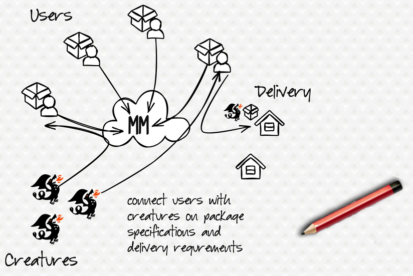 A conceptual diagram illustrating the MagicMail service.
"That sounds... ambitious," Ethan said, watching Maya's sketch take shape.
"It is. And that's where cloud computing comes in. We need to build a scalable, resilient system that can handle thousands of concurrent deliveries, track magical creatures in real-time, manage user accounts, and ensure packages get delivered correctly."
 MagicMail Magical creature package transport services
MagicMail Magical creature package transport services
The Complete Architecture
Maya flipped to a fresh napkin. "Let me show you the complete architecture we're going to build. I'll introduce the concepts first, and then mention which cloud services we'll use to implement them. Don't worry about understanding everything now—we'll build it piece by piece over the coming weeks."
She began drawing a comprehensive diagram, narrating as she went.
 High-level architecture diagram of MagicalMail service
High-level architecture diagram of MagicalMail service
"At a high level, we're building a cloud-native, microservices-based architecture. Let's break it down into layers:
First, we need a way to deliver our web application to users worldwide quickly and efficiently. In cloud terms, we'll use a content delivery network (CloudFront) and static website hosting (S3). Think of S3 as a place to store our website files, and CloudFront as a global network that caches those files closer to users for faster loading.
Next, we need an API layer to handle requests from the frontend. This acts like a central entry point or traffic controller, routing requests to the right backend services. We'll implement this using API Gateway."
Ethan leaned forward, studying the diagram. "And what's happening behind this API layer?"
"That's where the core business logic lives," Maya smiled. "We'll create several microservices, each a small, independent application with a specific responsibility:
One service matches delivery requests with available creatures (like a dispatch system).
Another tracks creature availability and capabilities (a resource management service).
A third provides real-time package location updates (a tracking service).
And another handles user accounts and profiles (an authentication/user management service).
For these services, we'll use a serverless approach with Lambda. This means we write the code for each function, and AWS handles running it and scaling it automatically without us managing servers."
"What about storing data?" Ethan asked.
"Good question. Each microservice needs its own data storage. For data that needs flexibility, like creature capabilities or package details, we'll use DynamoDB, AWS's NoSQL database service. It's super fast and scalable. For data that fits a more traditional table structure, like user relationships or billing information, we'll use Amazon RDS, their managed relational database service."
"And how do these services communicate with each other?" Ethan asked, pointing to the lines Maya had drawn between components.
"Another excellent question! Instead of direct calls, which can make services tightly dependent on each other, we'll use an event-driven approach. When something significant happens (like a package being ready for pickup), a service publishes an event. Other services interested in that event (like the creature dispatch service) can subscribe and react accordingly. This creates loose coupling. We'll use AWS services like event buses, queues, and notification systems to implement this."
Infrastructure as Code Philosophy
Maya set her pencil down. "Now, here's where it gets interesting. We could build all this by clicking buttons in the AWS web console, configuring each piece manually."
"I'm guessing we're not going to do that," Ethan said with a smile.
"Absolutely not. We're going to use Infrastructure as Code (IaC). This means we'll write actual code to define and provision our infrastructure—just like we write code for applications."
"So the infrastructure itself becomes a software artifact?"
"Exactly! It can be version-controlled in Git, tested automatically, and deployed reliably. We'll use a toolkit specifically designed for this purpose, called the AWS Cloud Development Kit, or CDK for short. It allows us to define our entire infrastructure using TypeScript."
"TypeScript? Like JavaScript but with types?"
"That's right. We'll leverage a programming language you might be familiar with, but gain the benefits of strong typing to catch errors early. This is much more powerful than using simple configuration files because we can use programming constructs like loops, conditionals, and classes to create reusable, maintainable infrastructure patterns."
Maya grabbed another napkin. "Think of it this way: we write CDK code using TypeScript. The CDK tool then translates this code into CloudFormation templates (which are like detailed blueprints). Finally, AWS CloudFormation uses these templates to create the actual cloud resources."
She sketched a simple diagram: 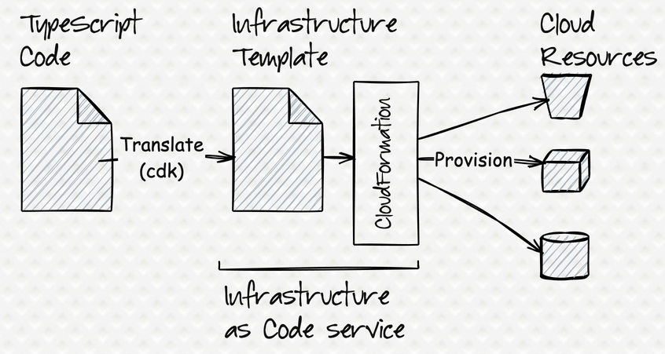IaC flow diagram: CDK Code -> (Synth) -> CloudFormation Template -> (Deploy) -> AWS Resources
"The beauty of this approach is that we can start simple and incrementally build complexity. We can create reusable components (like a standard setup for a microservice) and compose them into larger systems."
Project Objectives
"So, what are our goals for MagicMail?" Ethan asked, flipping to a fresh page in his notebook.
”Great question. Let me outline our key objectives:
Scalability: The system needs to handle peak delivery times, especially during holiday seasons or dragon rush hour.
Reliability: Packages must be tracked accurately, and the system should be resilient to failures (even if a griffin has a bad day).
Security: User data and payment information must be protected with strong security measures.
Cost-effectiveness: We need to build efficiently and optimize for AWS costs as we scale.
Operability: The Cloud Operations team needs tools and visibility to monitor system health and troubleshoot issues.
Extensibility: We need to design for future features like international deliveries or new types of magical creatures."
Maya continued, "From a technical perspective, we're building this prototype to demonstrate cloud-native best practices. That means:
Microservices architecture
Serverlesscompute wherever appropriate
Stateless designfor services whenever possible
Infrastructure as Codefor everything
Event-driven communication patterns
Continuous integration and deployment(CI/CD) pipelines for automation"
Learning Journey Ahead
Ethan finished writing and looked up. "This is a lot to take in. Where do we start?"
"We'll take it step by step," Maya reassured him. "Today was about seeing the big picture. First thing next week, we'll set up your development environment with all the tools you'll need - AWS account access, development tools like VS Code, and the CDK framework itself."
"Then we'll cover cloud fundamentals—understanding how AWS is structured globally (regions, availability zones) and the core service categories. After that, we'll move into Infrastructure as Code concepts using CloudFormation first, then TypeScript basics, and finally CDK fundamentals."
"Once we have that foundation, we'll start building the actual infrastructure components for MagicMail using CDK—storage (S3), databases (DynamoDB, RDS), compute (Lambda), APIs (API Gateway). Then we'll tackle the more advanced pieces like event-driven architecture, workflows, monitoring, and security."
"Finally, we'll implement each microservice and tie everything together. By the end, you'll understand not just how to use cloud services and CDK, but why we're making each architectural decision."
Ethan nodded, looking at Maya's napkin diagrams spread across the table. "I can't wait to get started. Should I do anything to prepare before our next session?"
"Great question," Maya replied. "If you could review some TypeScript basics, that would be helpful, although we will cover what you need. Also, create a free AWS account if you don't already have one. We'll use this for learning as we build our MagicMail system."
Ethan's Homework
Sketch a simple architecture diagram showing a
cloud-nativeapplication with a web frontend, API layer, and database. Think about a simple online store or blog.Sign up for a free
AWS accountif you don't already have one (aws.amazon.com/free).Log in to the
AWS Management Consoleand try to locate the key services mentioned in this chapter (S3,Lambda,DynamoDB,API Gateway). Just explore, no need to create anything yet.
Key Takeaways
MagicMail is our example project: a whimsical delivery platform using magical creatures, built on AWS.
The architecture follows
cloud-native,microservicesprinciples for scalability and resilience.We will use
Infrastructure as Code(IaC) via theAWS CDKandTypeScriptto define and manage our cloud resources.The project will be built incrementally, focusing on scalability, reliability, security, and cost-effectiveness.
The learning journey progresses from fundamentals (AWS, IaC, TypeScript) to building components with CDK.
Looking Ahead
In the next chapter, Maya will guide Ethan through setting up the necessary AWS account security and local development tools required to start building with AWS CDK.
AWS Services Introduced
Amazon S3 (Simple Storage Service): Stores files like website assets, images, or backups. Think of it as cloud storage drives.
Amazon CloudFront: A Content Delivery Network (CDN) that speeds up website loading for users worldwide by caching content closer to them.
Amazon API Gateway: Acts as the "front door" for our application's backend logic, managing incoming requests and routing them to the correct service.
AWS Lambda: Runs our application code (
serverlessfunctions) in response to events or API requests without needing to manage servers. Powers our microservices.Amazon DynamoDB: A fast and flexible
NoSQLdatabase, great for storing data like creature profiles or package statuses where the structure might evolve.Amazon RDS (Relational Database Service): A managed service for traditional relational databases (like SQL databases), suitable for structured data like user accounts or orders.
AWS CDK (Cloud Development Kit): Our main tool! A software development framework for defining cloud infrastructure using code (like
TypeScript).AWS CloudFormation: The underlying AWS service that CDK uses to actually create and manage the infrastructure defined in our code.
Chapter 2
Setting Up Your Development Environment
Maya had arrived early to prepare for her second session with Ethan. She'd reserved one of MagicTech's small meeting rooms and was setting up her laptop when Ethan walked in.
"Good morning, Ethan," Maya greeted. "Today's all about getting your tools in place. Think of it as gathering the materials before we start building."
"Makes sense," Ethan replied, opening his laptop. "I've been excited to get my hands on some actual code."
"Perfect. We'll be working in two environments today," Maya explained, drawing a simple diagram on the whiteboard. "First, the AWS Management Console—a web interface where we'll set up your account and permissions. Second, your local development environment where we'll install the tools needed to write and deploy infrastructure code."
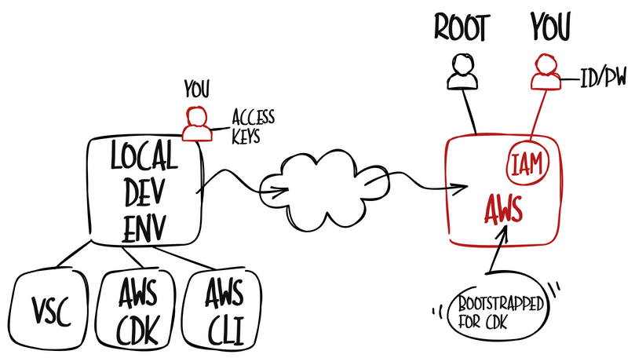Development environment
AWS Environment Setup
Maya pointed to the first box on her diagram. "Let's start with the AWS side of things."
AWS Account Creation
"I see you've already created an AWS account—excellent," Maya said. "For anyone following along, you'd start by going to aws.amazon.com and clicking 'Create an AWS Account'."
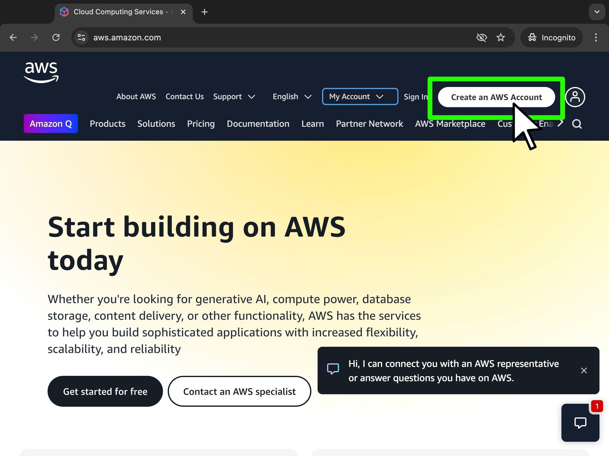Screenshot of AWS account creation page
Understanding the Root User
"When you first created your AWS account, you set up what's called a root user,” Maya explained. "The root user is the account owner with complete, unrestricted access to all AWS services and resources."
 Screenshot of AWS Console loging page showing root user singn-in
Screenshot of AWS Console loging page showing root user singn-in
"Think of the root user like having the master key to an entire building," she continued. "It's extremely powerful, but that also makes it dangerous if it falls into the wrong hands. AWS best practices strongly recommend not using the root user for everyday tasks."
Ethan looked concerned. "So I shouldn't use the email and password I created the account with?"
"Exactly," Maya nodded. "The root user should only be used for a handful of specific tasks that only the root user can perform, like changing account settings or closing your AWS account. For everything else—including all our MagicMail development work—we'll create and use IAM users with appropriate permissions."
"That's why our next steps are so important: first, we'll secure the root user with multi-factor authentication, and then we'll create a separate IAM user for your development work."
Setting Up Multi-Factor Authentication (MFA) for the Root User
"Now, let's enhance the security of your root account by enabling MFA," Maya continued. "This adds an extra layer of security, requiring a code from an authenticator app or hardware device in addition to your password."
 Screenshot showing where to find MFA settings in Security Credentials
Screenshot showing where to find MFA settings in Security Credentials
"In the AWS Console, logged in as the root user, click on your account name in the top right, then select Security Credentials. Under the Multi-factor authentication (MFA) section, click Assign MFA device.”
 Screenshot of the MFA setup wizard steps
Screenshot of the MFA setup wizard steps
"You can use a virtual MFA device like Google Authenticator or Authy on your smartphone, or a hardware key. Follow the prompts to set it up. Once configured, you'll need both your password and a temporary code from your MFA device to sign in as the root user. Protect your root user credentials and MFA device carefully."
Creating an IAM User for Development
"Next, still in the AWS Console (you can log out as root and log back in using the IAM user creation process, or use the root user just for this initial setup), we'll create an IAM user for your development work," Maya explained. "This user will have specific permissions, following the principle of least privilege eventually, though we'll start with broader permissions for learning."
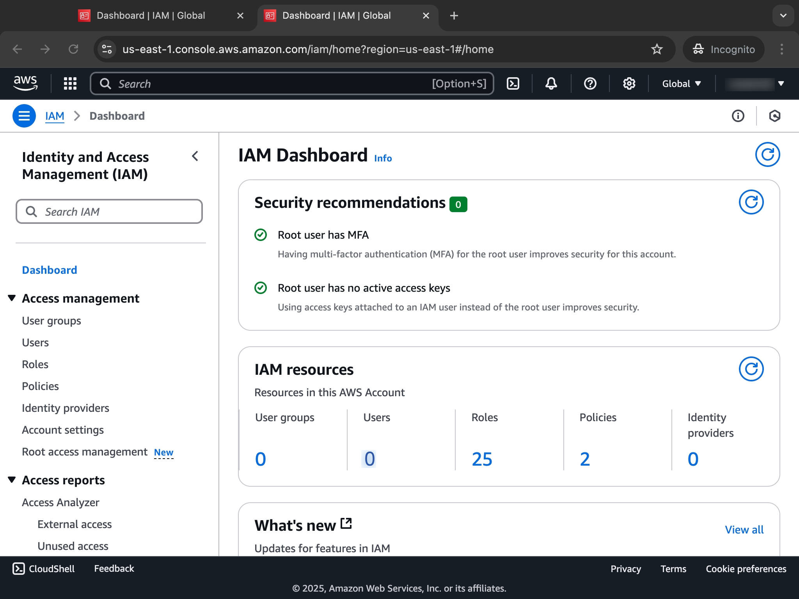Screenshot of the IAM dashboard
"Navigate to the IAM service from the AWS Console. Click Users in the left navigation and then Add users.”
 Screenshot of the initial IAM user creation page
Screenshot of the initial IAM user creation page
"Let's name your user MagicMailDeveloper. For access type, select Provide user access to the AWS Management Console - *optional*. We'll set up a console password for now." Choose 'I want to create an IAM user' and set an initial password (you can require a password reset on first login).
 Screenshot showing permissions options - Attach policies directly
Screenshot showing permissions options - Attach policies directly
"For permissions, select Attach policies directly. Search for and attach the AdministratorAccess policy. Warning: This policy grants full administrative access. For learning purposes, this simplifies setup, but in a real-world production environment, you must follow the principle of least privilege and grant only the specific permissions required for the tasks."
"Review the settings and click Create user. You'll see a success page."
 Screenshot of the IAM user creation success page showing console sign-in URL and username
Screenshot of the IAM user creation success page showing console sign-in URL and username
"Make a note of the console sign-in URL, your username (MagicMailDeveloper), and the password you set. Log out of the root user account now, and log back in using this new IAM user and the specific sign-in URL. From now on, use this IAM user for all your work unless specifically instructed otherwise."
Creating Access Key Credentials for Programmatic Access
"Now that we're logged in as MagicMailDeveloper, we need to generate access keys for programmatic access," Maya explained. "These credentials (an Access Key ID and a Secret Access Key) are used by tools like the AWS CLI and CDK to interact with AWS services on your behalf, without needing you to log into the console."
"In the IAM console, click on your username (MagicMailDeveloper) in the user list.”
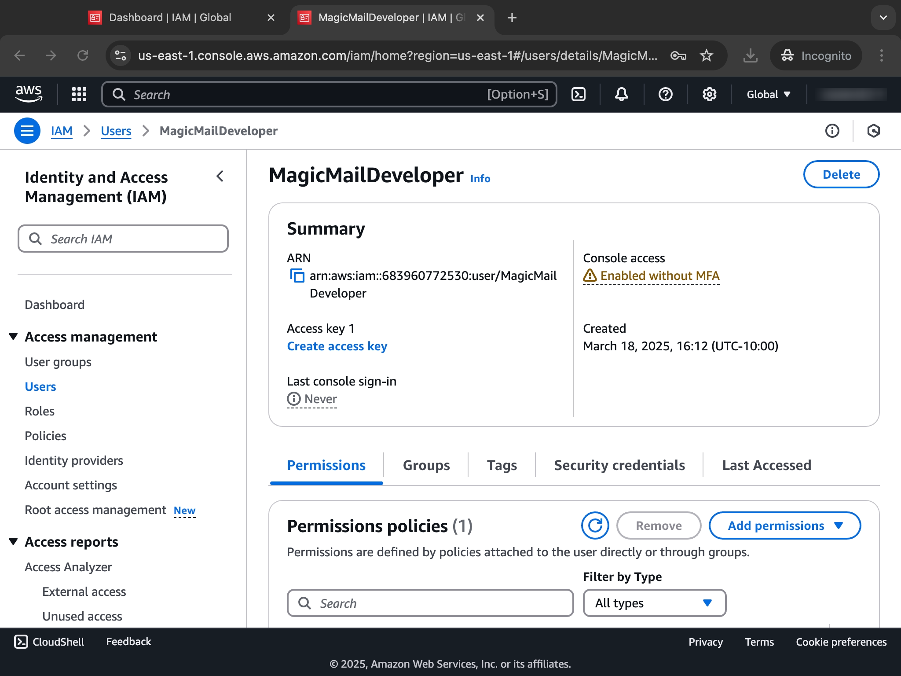Screenshot of the IAM user's summary page
"Navigate to the Security credentials tab. Scroll down to the Access keys section and click Create access key.”
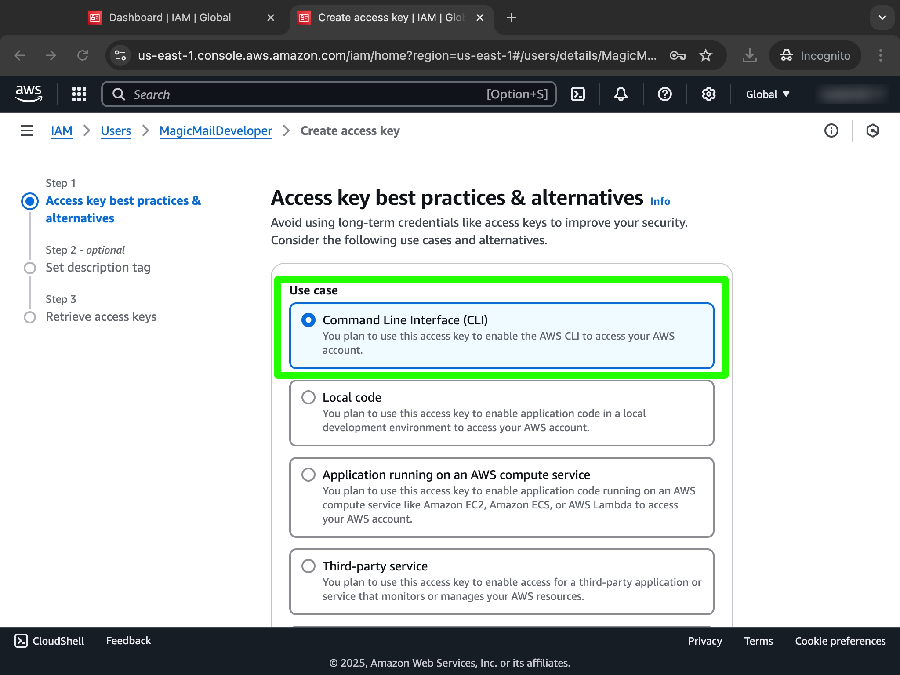Screenshot showing access key use case selection, highlighting CLI]
"AWS will ask about your use case. Select Command Line Interface (CLI) since we'll be using these credentials with the AWS CLI and CDK." Acknowledge the recommendation about alternatives if prompted, and proceed.
 Screenshot of access key description tag option/confirmation
Screenshot of access key description tag option/confirmation
"You can add an optional description tag, like 'CDK Development Key', then click Create access key. You'll see your newly created credentials."
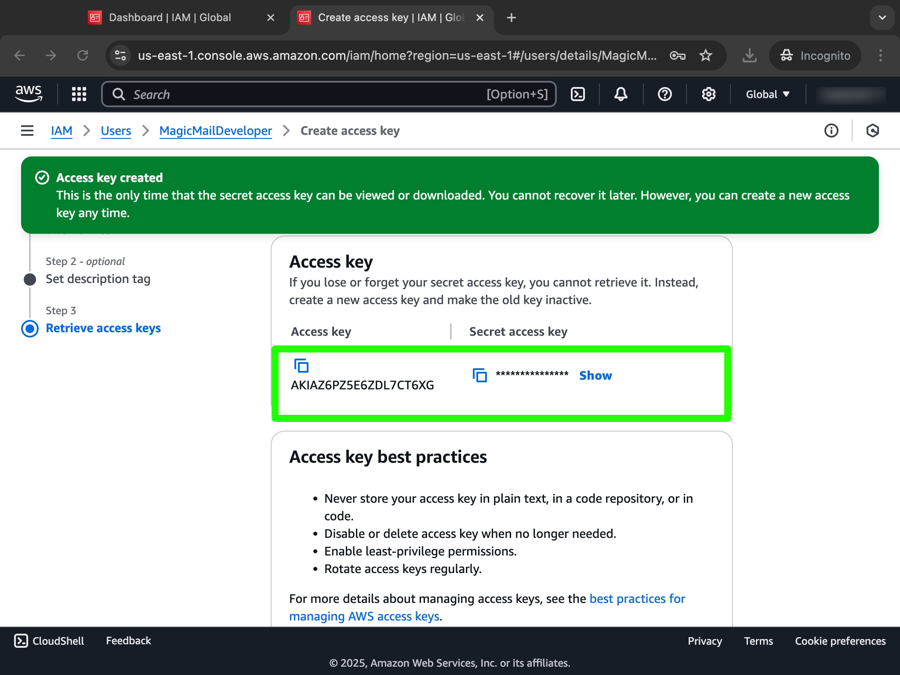Screenshot showing the Access Key ID and Secret Access Key - emphasize this is the only time the secret is shown
"This is the only time the Secret Access Key will be shown. You must download the .csv file containing both keys and store it securely. Treat these keys like your root password."
Local Development Environment Setup
Maya moved to the second box on her whiteboard. "Now let's set up your local machine with all the tools needed to develop and deploy AWS infrastructure."
Installing Visual Studio Code
"Our first tool is VS Code, a powerful code editor," Maya said. "If you don't already have it installed, download it from code.visualstudio.com."
 Screenshot of VS Code download page
Screenshot of VS Code download page
"After installation, open VS Code and we'll set up some useful extensions."
Screenshot of VS Code Extensions view
"In VS Code, click on the Extensions icon in the sidebar (it looks like four small squares). Search for and install these extensions:
AWS Toolkit(Provides integration with AWS services)
JavaScript and TypeScript Nightly(Enhanced language support, optional but helpful)
ESLint(Helps enforce code style and find errors)
Prettier - Code formatter(Automatically formats your code for consistency)“
Installing Node.js and npm
"Next, we need Node.js and npm (Node Package Manager). CDK is built on Node.js, and we'll use npm to manage project dependencies, including the CDK library itself," Maya explained.
 Screenshot of Node.js download page, highlighting LTS version
Screenshot of Node.js download page, highlighting LTS version
"Download and install the LTS (Long Term Support) version of Node.js from nodejs.org. The npm package manager comes included."
"After installation, let's verify everything is working correctly. Open a terminal in VS Code by selecting 'Terminal' 'New Terminal' from the top menu."

Screenshot of an empty VS Code terminal
"Then run these commands to check the versions:"
xxxxxxxxxx
Screenshot of terminal showing successful version output for node and npm
"You should see version numbers printed for both commands."
Installing and Configuring the AWS CLI
"Now we need to install the AWS Command Line Interface (CLI), which lets us interact with AWS services directly from the terminal," Maya continued. "The CDK Toolkit uses the CLI behind the scenes for authentication and deployment."
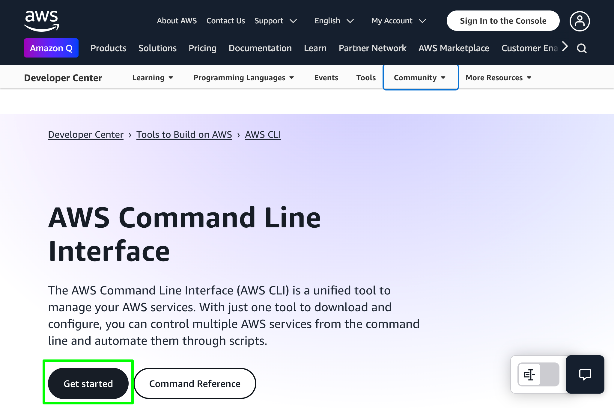Screenshot of AWS CLI installation instructions page
"Follow the installation instructions for your operating system available at aws.amazon.com/cli. Click on Getting started, then click on Install/Update from the left menu bar“
"After installation, verify it by running:"
xxxxxxxxxxScreenshot of terminal showing successful AWS CLI version output
“Now, we need to configure the CLI to use the access keys we created earlier for our MagicMailDeveloper IAM user. In your VS Code terminal, run:"
xxxxxxxxxx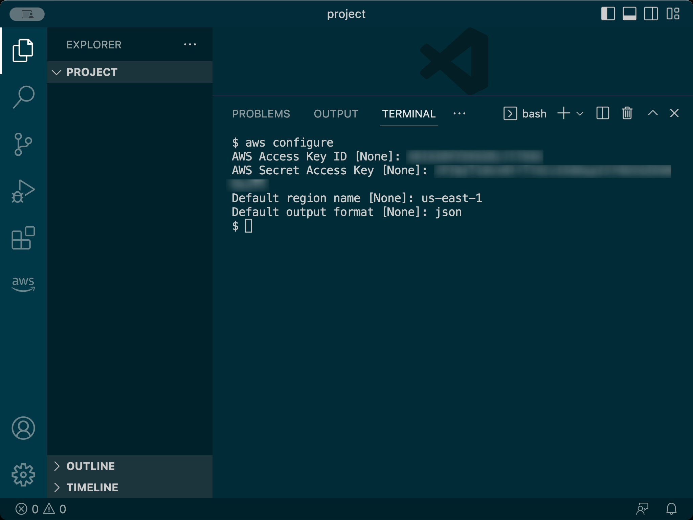Screenshot of terminal showing the aws configure prompts
"You'll be prompted for:
AWS Access Key ID: (Copy from the
.csvfile you downloaded)AWS Secret Access Key: (Copy from the
.csvfile)Default region name: Enter the region you want to work in primarily (e.g.,
us-east-1,eu-west-2). Choose a region close to you or your users. You can find a list of regions in the AWS documentation.Default output format: Enter
json.
This command securely stores your credentials in a configuration file on your local machine (typically ~/.aws/credentials and ~/.aws/config). The CDK and AWS CLI will automatically use these credentials."
"Let's verify the configuration by asking AWS who we are:"
xxxxxxxxxx  Screenshot of terminal showing output of aws sts get-caller-identity, including Account, UserId, and Arn for the IAM user
Screenshot of terminal showing output of aws sts get-caller-identity, including Account, UserId, and Arn for the IAM user
"This command contacts AWS using your configured credentials and asks for information about the current identity. You should see the AWS Account ID and the ARN (Amazon Resource Name) of your MagicMailDeveloper IAM user. This confirms that the CLI is configured correctly and can authenticate with AWS."
Installing the AWS CDK Toolkit
"Finally, let's install the AWS CDK Toolkit. This is the command-line utility (cdk) we'll use to interact with our CDK applications—to synthesize CloudFormation templates, deploy stacks, and manage our infrastructure," Maya said.
"We install it using npm. In your VS Code terminal, run:"
xxxxxxxxxx"The -g flag installs the CDK Toolkit globally on your system, making the cdk command available from any directory."
"Let's verify the installation:"
xxxxxxxxxx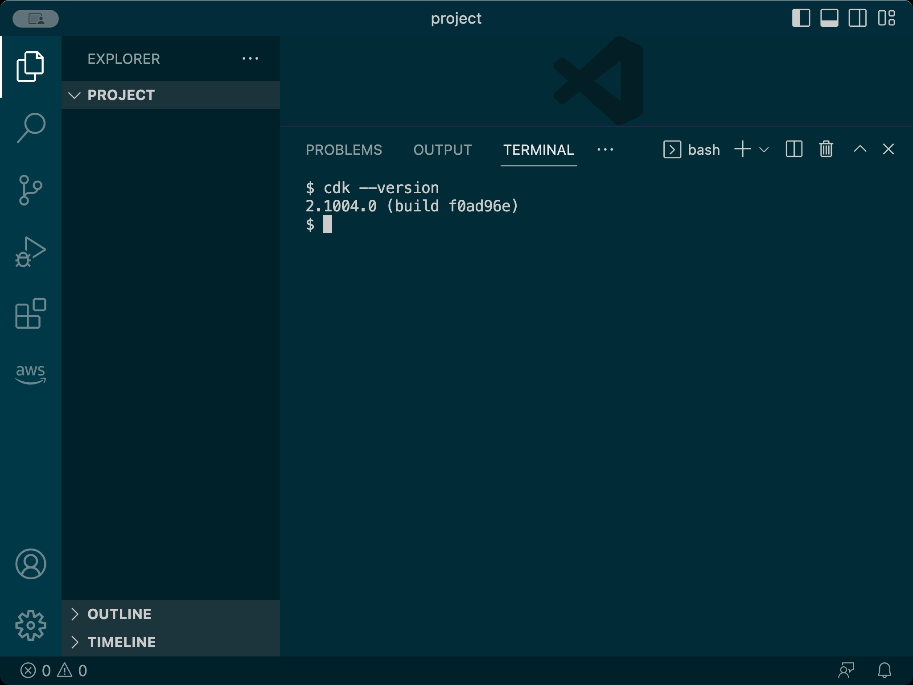screenshot of terminal showing successful CDK version output
"You should see the version number of the CDK Toolkit."
Bootstrapping Your AWS Environment
"There's one final setup step before we can deploy our first CDK app: bootstrapping," Maya explained. "Bootstrapping provisions the resources that the CDK needs in your AWS account and region to be able to deploy stacks. This includes an S3 bucket to store deployment assets (like CloudFormation templates) and IAM roles to grant CDK the necessary permissions."
"You only need to bootstrap an environment (a specific AWS account and region combination) once. In your VS Code terminal, run:"
xxxxxxxxxx"Replace ACCOUNT-NUMBER with your 12-digit AWS account number (you can find this in the output of aws sts get-caller-identity or in the AWS console) and REGION with the default region you configured with the AWS CLI (e.g., us-east-1)."
"If you don’t know your account number, you can get it using the AWS CLI:"
xxxxxxxxxx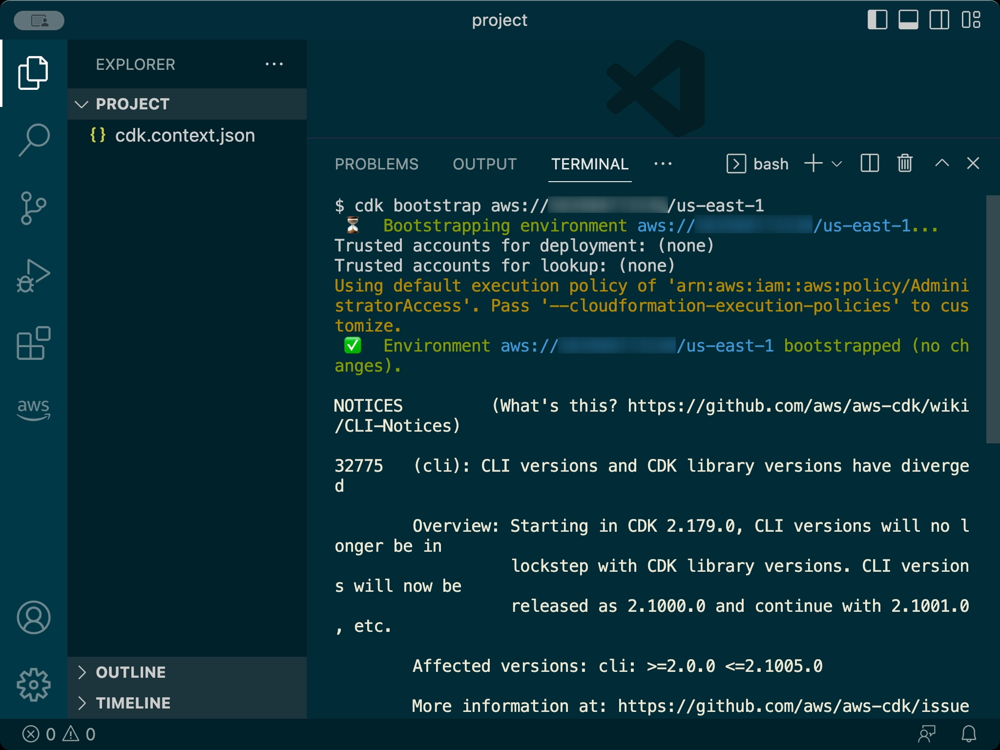Screenshot of terminal showing the output of a successful cdk bootstrap command
"This command creates a CloudFormation stack named CDKToolkit in your specified AWS account and region. This stack contains the necessary resources like the S3 bucket and IAM roles."
"You can verify this by going back to the AWS Management Console, navigating to the CloudFormation service, and ensuring you're in the correct region. You should see the CDKToolkit stack listed with a status of CREATE_COMPLETE."
 Screenshot of the CloudFormation console showing the CDKToolkit stack
Screenshot of the CloudFormation console showing the CDKToolkit stack
A Note on Version Control
"One last thing to mention is version control," Maya said, closing her laptop. "We'll need a way to track changes to our infrastructure code, just like we do with application code. The standard tool for this is Git."
Ethan nodded. "Should we set up a Git repository now?"
"Actually, let's hold off on initializing Git for this specific project just yet," Maya replied. "Our team at MagicTech uses GitLab for all our projects, and we'll be setting up a proper project structure with version control integrated into our CI/CD pipeline in a later session. I don't want you to set up one system now only to switch later. For now, just be aware that version control is essential, and we'll integrate it properly soon."
"Makes sense," Ethan agreed. "So we've got the AWS account secured, an IAM user with access keys, VS Code with extensions, Node.js, AWS CLI configured, and the CDK toolkit installed and bootstrapped. Anything else we need right now?"
"That covers all the essential tools to start our journey," Maya smiled. "Next time, we'll dive into AWS fundamentals before we begin coding. You'll be creating cloud infrastructure before you know it!"
Wrapping Up
Maya looked at Ethan's laptop screen with satisfaction. "Congratulations! You now have a complete development environment ready for AWS CDK. Let's recap what we've set up:"
"On the AWS side:
AWS account created.
Root user secured with MFA.
IAM user (
MagicMailDeveloper) created for development work, with console access and programmatic access keys (stored securely!).Bootstrapped environment (Account/Region) ready for CDK deployments (
CDKToolkitstack).
On your local machine:
VS Code installed with relevant extensions.
Node.js and npm installed.
AWS CLI installed and configured with your IAM user credentials.
AWS CDK Toolkit installed (
cdkcommand)."
Ethan nodded, looking pleased. "It feels good to have everything in place. What's next?"
"Next time, we'll dive into AWS fundamentals—understanding regions, availability zones, and the core services we'll use for MagicMail," Maya replied. "After that, we'll start writing actual CDK code."
"For homework, I recommend exploring the AWS Console (using your MagicMailDeveloper IAM user login) to get familiar with the interface. Try locating the services we mentioned in our first meeting: S3, Lambda, DynamoDB, and API Gateway. Also, find the CloudFormation service and look at the CDKToolkit stack that was created."
"Also, keep your development environment handy—we'll use it extensively in future sessions."
Ethan packed up his laptop. "Thanks, Maya. I'll explore the console and make sure everything stays working."
"Perfect. See you next week for our AWS fundamentals session!"
Ethan's Homework
Ensure all required development tools are installed: AWS CLI, Node.js (LTS), and VS Code with recommended extensions.
Verify your AWS CLI configuration is working by running
aws sts get-caller-identityand confirming it shows yourMagicMailDeveloperuser details.Confirm you have successfully run
cdk bootstrapfor your chosen AWS account and region by checking for theCDKToolkitstack in the CloudFormation console for that region.(Optional) Explore the AWS console using your
MagicMailDeveloperIAM user login. Locate S3, Lambda, DynamoDB, API Gateway, and CloudFormation services.
Key Takeaways
A complete AWS CDK development environment consists of both AWS account setup/security and local development tools.
Security First: Always secure your root user with MFA and use IAM users with appropriate permissions for daily tasks. Protect access keys diligently.
Local development tools include a code editor (VS Code), Node.js/npm, the AWS CLI (configured with IAM user credentials), and the AWS CDK Toolkit (
cdkcommand).Bootstrapping (
cdk bootstrap) prepares your AWS account/region to work with CDK deployments by creating necessary resources (like theCDKToolkitstack).Version control (like Git) is essential for managing infrastructure code, though we deferred specific setup for this project.
Looking Ahead
In the next chapter, Maya will guide Ethan through AWS fundamentals, explaining regions, availability zones, and the core services that will form the foundation of MagicMail.
AWS Services Introduced
AWS IAM (Identity and Access Management): Service for securely controlling access to AWS resources. Used to create users (like
MagicMailDeveloper), manage permissions, and generate access keys.AWS CLI (Command Line Interface): A tool to manage AWS services from your terminal. Used for configuration (
aws configure) and interacting with AWS programmatically. The CDK uses it under the hood.
Chapter 3
Cloud Fundamentals
The coffee shop was noticeably busier than usual when Ethan arrived for his third session with Maya. She had already secured their regular corner table and was sketching something on her tablet. As Ethan approached, she looked up with a smile.
"I thought we'd switch from napkin sketches to digital today," Maya said, turning her tablet to show a map of the world with various icons scattered across it. "Ready to learn about the AWS global infrastructure?"
"Definitely," Ethan replied, setting down his laptop. "I've been exploring the console like you suggested. There are so many services—it's a bit overwhelming."
"That's why we're starting with the fundamentals," Maya nodded. "Before we dive into individual services, we need to understand how AWS is organized globally and how that affects our architectural decisions."
Maya took a sip of her coffee. "Oh, and I have good news. The product team loves our infrastructure-as-code approach for MagicMail. They've asked us to create a basic asset storage system for their initial designs and mockups using the console first. It's the perfect opportunity to learn about S3 while building something useful for the project, before we automate it with code later."
Understanding AWS Global Infrastructure
"Let's start with how AWS organizes its infrastructure around the world," Maya said, zooming in on her tablet diagram.
 World map showing AWS Regions: https://aws.amazon.com/about-aws/global-infrastructure/
World map showing AWS Regions: https://aws.amazon.com/about-aws/global-infrastructure/
"AWS has a massive global footprint, consisting of Regions, Availability Zones (AZs), and Edge Locations. Each Region is a separate geographic area, like us-east-1 in Northern Virginia or eu-west-1 in Ireland."
"I've heard of regions," Ethan said. "When I configured the AWS CLI, I set my default region to us-east-1."
"That's right. A region is essentially a cluster of data centers in a specific geographic location. AWS has regions all over the world—in North America, South America, Europe, Asia, Africa, and Australia."
Maya tapped on one of the regions on her tablet, expanding it to show multiple icons. "Each region consists of multiple, isolated Availability Zones or AZs. Think of an AZ as one or more discrete data centers with redundant power, networking, and cooling. They're physically separate within a region—far enough apart that a disaster like a fire or flood affecting one AZ is unlikely to affect others, but close enough to have very low-latency network connections between them (typically measured in single-digit milliseconds)."
Diagram showing a Region containing multiple AZs, highlighting their separation and interconnection
"So if there's a power outage in one data center or AZ, our application could still run in another?" Ethan asked.
"Exactly! That's the core idea behind high availability. Distributing your application across multiple AZs within a region is a fundamental best practice for building resilient systems that can withstand failures in a single data center."
Maya zoomed out on her diagram. "AWS also has Edge Locations, plus Regional Edge Caches. These are points of presence located in major cities around the world, much more numerous than AZs. They are primarily used by services like Amazon CloudFront, AWS's content delivery network (CDN), to cache content closer to end-users, reducing latency and improving performance."
"So for MagicMail, we could use CloudFront and these edge locations to make our web application load faster for users across the globe?"
"Precisely. That's part of our plans for the web frontend." Maya smiled, impressed by Ethan's quick grasp of the concept.
Choosing the Right Region
"When building an application like MagicMail, one of our first decisions is which AWS region or regions to deploy our resources into," Maya explained. "This decision affects several key factors:"
Diagram or list showing factors: Latency, Compliance, Service Availability, Cost
"Here's what to consider:
Latency: Choose regions physically closest to the majority of your users to minimize delay (latency) in accessing your application. For a global application, you might deploy to multiple regions.
Compliance and Data Residency: Certain laws or regulations (like GDPR in Europe) may require data to be stored within specific geographic boundaries. You need to choose regions that meet these requirements.
Service Availability: While most core services are available in almost all regions, newer or specialized AWS services might launch first in specific regions before becoming globally available. Always check if the services you need are available in your target region.
Cost: Pricing for AWS services can vary slightly between regions. While often not the primary driver, significant cost differences might influence your decision, especially for large deployments."
"For MagicMail, we'll start in us-east-1 (N. Virginia). It's one of the oldest and largest regions, typically gets new services first, and is a good starting point for serving North American users. However, we'll design our application with multi-region deployment in mind for future expansion."
AWS Service Categories
Maya opened a new diagram on her tablet, showing a hierarchical structure of AWS services. "AWS offers over 200 services now, which can seem overwhelming. Let's break them down into logical categories to make them more manageable."
Diagram showing major AWS service categories
"At a high level, AWS services fall into these main categories:
Compute: Services that provide processing power (e.g.,
EC2virtual machines,Lambdaserverless functions).Storage: Services that store data (e.g.,
S3object storage,EBSblock storage for EC2,EFSfile storage).Database: Managed database services (e.g.,
RDSrelational databases,DynamoDBNoSQL database).Networking & Content Delivery: Services for defining networks and delivering content (e.g.,
VPCvirtual networks,Route 53DNS,CloudFrontCDN,API Gateway).Security, Identity & Compliance: Services for securing resources and managing access (e.g.,
IAM,KMSencryption keys,WAFweb application firewall).Management & Governance: Services for monitoring, logging, and managing your AWS environment (e.g.,
CloudWatchmonitoring,CloudTraillogging,CloudFormationIaC).Machine Learning, Analytics, Developer Tools, and many more..."
"Let's focus on the ones we'll use most for MagicMail," Maya continued, highlighting several services on her diagram.
"For compute, we'll primarily use Lambda. For storage, S3. For databases, DynamoDB and RDS. For networking and delivery, API Gateway and CloudFront. And we'll rely heavily on IAM for security and CloudFormation/CDK for management."
"That's still quite a few services," Ethan noted.
"True, but we'll tackle them one at a time, starting with S3 today. Remember that these services are designed to work together seamlessly, like building blocks, allowing us to create sophisticated applications."
Introduction to Amazon S3
"Now let's talk about Amazon S3, which stands for Simple Storage Service," Maya said, opening a new tab in her browser showing the S3 console. "S3 is one of AWS's oldest and most fundamental services. It's an object storage service designed for storing and retrieving virtually any amount of data from anywhere on the web."
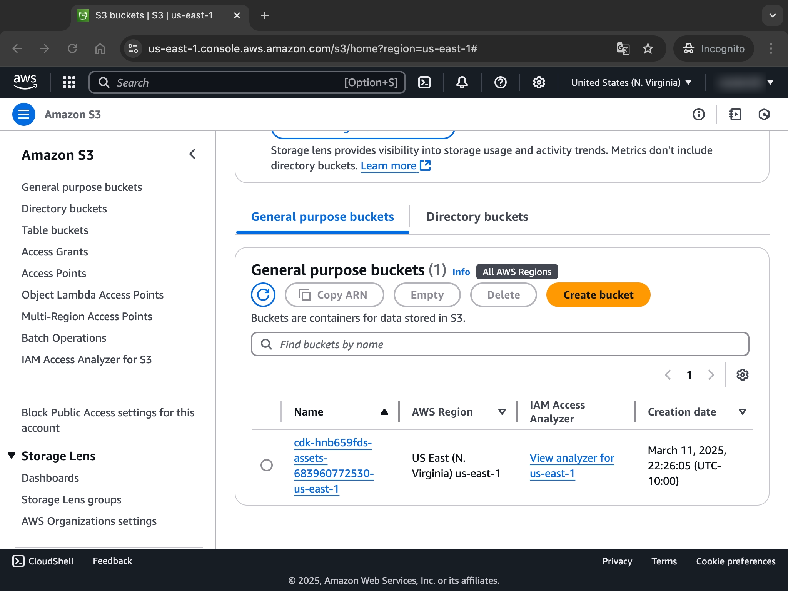
Screenshot of the main S3 console page showing a list of buckets
"What exactly is 'object storage'?" Ethan asked. "How is it different from the file systems on my laptop?"
"Great question," Maya replied. "Traditional file systems (like on your laptop) organize data in a hierarchy of directories and files. Object storage is different. It manages data as objects, where each object consists of the data itself, metadata (descriptive information about the data), and a unique identifier (the object key)."
Maya drew a quick comparison on her tablet:
Diagram comparing a tree-like file system structure to a flat object storage structure with buckets and objects
"Instead of complex directory trees, S3 uses a flat structure based on buckets. A bucket is a container for objects. You can think of it like a top-level folder, but bucket names must be globally unique across all AWS accounts. Inside buckets, you store your objects. While you can use prefixes and delimiters (like /) in object keys to simulate folders for organizational purposes (e.g., images/dragons/red-dragon.png), S3 itself sees it as a flat structure within the bucket."
"S3 is designed for extreme durability and availability. AWS automatically stores copies of your S3 data across multiple physical facilities (within the AZs of your chosen region) to protect against data loss. S3 Standard is designed for 99.999999999% (eleven 9s) durability of objects over a given year. That means if you store 10,000 objects, you could expect to lose one object every 10 million years on average!"
"That sounds incredibly reliable," Ethan remarked.
"It is. S3 is also designed for high availability, meaning your data is readily accessible when you need it. It's built to handle massive scale and concurrent access. It's one of the most robust storage systems available."
"How do you organize data in S3?" Ethan asked again, wanting to solidify the concept.
"As I mentioned, data is organized into buckets. You create buckets, and then you upload objects (your files) into those buckets. Each object has a key, which is its unique name within the bucket (including any 'folder' prefixes like images/dragons/red-dragon.png)."
Maya opened her browser's developer tools. "For example, if you had a bucket named magicmail-assets-dev-unique123 in the us-east-1 region and uploaded an image with the key images/dragons/red-dragon.png, the S3 URI path would look like:"
xxxxxxxxxx"And if the object was made publicly accessible (which requires specific permission settings), its HTTP URL might look something like:"
xxxxxxxxxx"Though often, for public content, we'd serve it through CloudFront for better performance and potentially lower cost."
Key S3 Concepts
"Before we create our first bucket, let's cover some key S3 concepts," Maya said, bringing up a new slide on her tablet.
Diagram illustrating key S3 concepts
"We've talked about buckets, objects, and keys. Let me explain a few more important concepts:
Storage Classes: S3 offers different storage classes optimized for various access patterns and costs.
S3 Standardis the default for frequently accessed data. Others likeS3 Standard-IA(Infrequent Access) orS3 Glacier(Archival) offer lower storage costs but may have retrieval fees or longer retrieval times.Lifecycle Policies: These allow you to automate actions on your objects over time. You can define rules to automatically transition objects to cheaper storage classes (e.g., move to IA after 90 days, then to Glacier after a year) or to automatically delete objects after a certain period.
Versioning: You can enable versioning on a bucket to keep multiple variants of an object. When enabled, deleting an object adds a delete marker instead of removing it permanently, and overwriting an object creates a new version. This protects against accidental deletions or overwrites.
Access Control: S3 provides multiple ways to control who can access your buckets and objects and what actions they can perform. This includes Bucket Policies (JSON documents defining permissions for the bucket), IAM Policies (controlling user/role access), Access Control Lists (ACLs) (a legacy method, generally discouraged now), and Block Public Access settings (global overrides to prevent accidental public exposure).
Static Website Hosting: S3 buckets can be configured to host static websites (HTML, CSS, JavaScript, images).
Encryption: S3 provides options for encrypting data at rest (using keys managed by S3, KMS, or provided by you) and enforcing encryption in transit (using HTTPS)."
"That's a lot to take in," Ethan said, noting down the concepts.
"We'll explore each as we need them. For today, let's focus on creating a bucket, understanding basic access control, and uploading objects."
Hands-on: Creating an S3 Bucket in the Console
"Now let's create our first S3 bucket for MagicMail's assets using the AWS Management Console," Maya said, navigating to the S3 service in her browser. "This will be where the product team stores their design files, mockups, and other assets during development."

Screenshot of the S3 'Create bucket' page - General configuration section
"First, click Create bucket. We need to choose a globally unique bucket name. Bucket names have specific rules (lowercase letters, numbers, hyphens, dots, between 3 and 63 characters). Let's try magicmail-assets-dev-[your-initials-or-random-number]. You'll need to make it unique, so add something specific to you. If the name is already taken, AWS will tell you when you try to create it."
"Now, choose the AWS Region where the bucket will reside. We'll use us-east-1 as we discussed earlier."
"Next, there are several configuration options. Let's review them:"
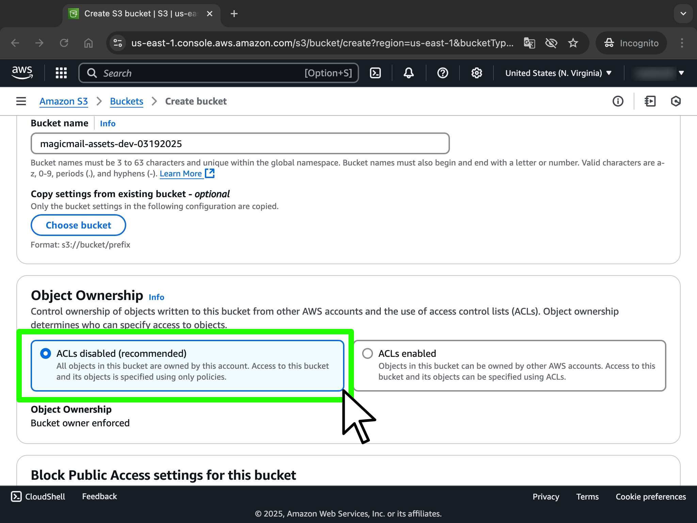
Screenshot of the 'Object Ownership' section, showing 'ACLs disabled (recommended)'
"For Object Ownership, we'll leave it at the default and recommended setting: ACLs disabled. This simplifies permissions management, relying solely on IAM and bucket policies."
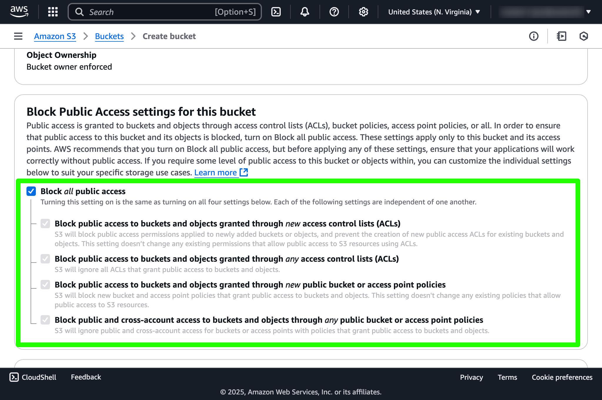
Screenshot of the 'Block Public Access settings for this bucket' section, showing all boxes checked
"For Block Public Access settings, we'll keep all the blocks enabled for now. This is the most secure default setting and prevents any accidental public access to our bucket or objects. We would only disable specific blocks if we had a clear use case, like hosting a public website."
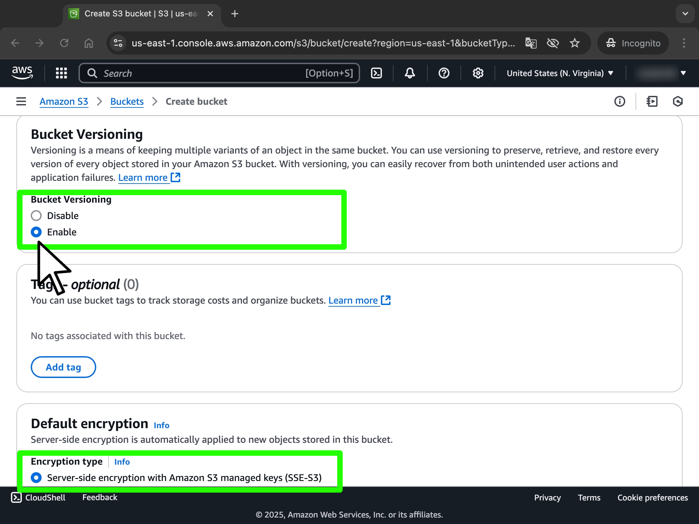
Screenshot of 'Bucket Versioning' and 'Default encryption' sections
"Let's enable Bucket Versioning. This is highly recommended for protecting data against accidental deletion or modification."
"For Default encryption, we'll leave it at the default Amazon S3 managed keys (SSE-S3). This ensures all new objects uploaded to the bucket are automatically encrypted at rest."
"We won't set up any Tags right now through the console, but tags (key-value pairs) are very useful for cost allocation, automation, and resource organization in larger environments. We'll add tags later using code."
"Review the settings and click Create bucket at the bottom."

Screenshot of the S3 bucket list showing the newly created bucket
"Perfect! We've created our first AWS resource for MagicMail using the console. This S3 bucket will serve as the asset storage for our project."
Understanding S3 URLs and ARNs
Maya opened a text editor. "Let's talk about how to reference our new S3 bucket and the objects within it. In AWS, resources can be referenced in multiple ways."
"First, there's the S3 console URL format, which lets you browse the bucket in the web interface. It looks something like this (replace with your actual bucket name and region):"
xxxxxxxxxx"Then there's the S3 URI used by tools like the AWS CLI:"
xxxxxxxxxx"For specific objects, you append the key path:"
xxxxxxxxxx"And as we saw earlier, there's the HTTP(S) endpoint for accessing objects directly via the web (if permissions allow):"
xxxxxxxxxx"Finally, and very importantly for permissions and code, there's the ARN (Amazon Resource Name). This is a standardized way to uniquely identify any resource in AWS. For our bucket, it would look like this (replace with your actual bucket name and account ID):"
xxxxxxxxxx"And for a specific object within the bucket:"
xxxxxxxxxx"ARNs are crucial because they are used extensively in IAM policies and Bucket Policies to grant or deny permissions to specific resources."
Uploading Objects to S3
"Now, let's upload some files to our bucket," Maya said, clicking on the newly created bucket name in the S3 console. "These could be design assets for MagicMail."

Screenshot of the S3 console view inside the bucket, highlighting the 'Upload' button
"Click Upload. You can drag and drop files or use the Add files / Add folder buttons."
"Let's create a logical folder structure first. Although S3 has a flat structure, the console and tools use the / delimiter to simulate folders. Click Create folder, name it images, and click Create folder again. Do the same for design-files and mockups."
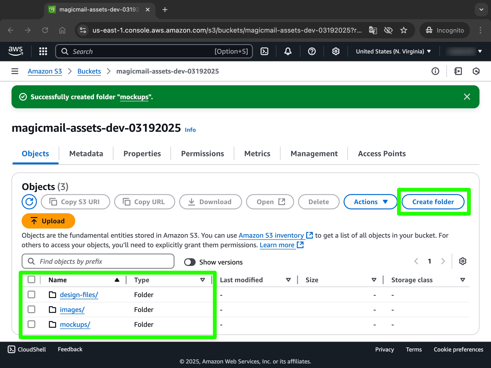
Screenshot showing the 'images', 'design-files', 'mockups' folders inside the bucket
"Now, navigate into the images folder and click Upload. Let's upload a sample logo file."

Screenshot of the S3 upload interface with a sample file added
"You can review properties, permissions, and storage class before uploading. For now, we'll use the defaults. Click Upload."

Screenshot showing the successfully uploaded file inside the 'images' folder
"Perfect! We've successfully uploaded our first asset to the S3 bucket."
S3 Permissions and Access Control (Brief Overview)
"Let's briefly touch on how to control access," Maya said, navigating back to the bucket level and clicking on the 'Permissions' tab. "This is a deep topic, but it's crucial for security."
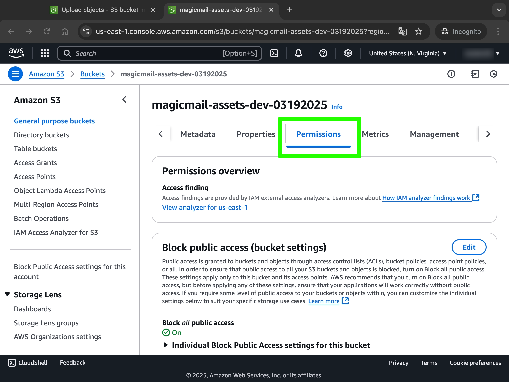
Screenshot of the bucket's 'Permissions' tab
"As mentioned, S3 provides multiple mechanisms for access control:
Block Public Access: These are the primary settings (which we left enabled) to prevent accidental public exposure at the account or bucket level.
Bucket Policies: Powerful JSON documents attached to the bucket itself, defining fine-grained permissions (e.g., allow specific users to read objects, allow a service to write objects).
IAM Policies: Attached to users, groups, or roles, defining what AWS actions they can perform on which resources (including S3 buckets/objects).
Access Control Lists (ACLs): A legacy method for object-level permissions (generally avoid unless you have a specific need that policies can't cover).
"For MagicMail, we'll primarily use IAM policies (like the AdministratorAccess your user currently has, though we'll restrict this later) and potentially Bucket Policies for specific cross-account access or service integrations. Since we disabled ACLs, we don't need to worry about those."
"Let's look at where you'd edit the Bucket Policy."
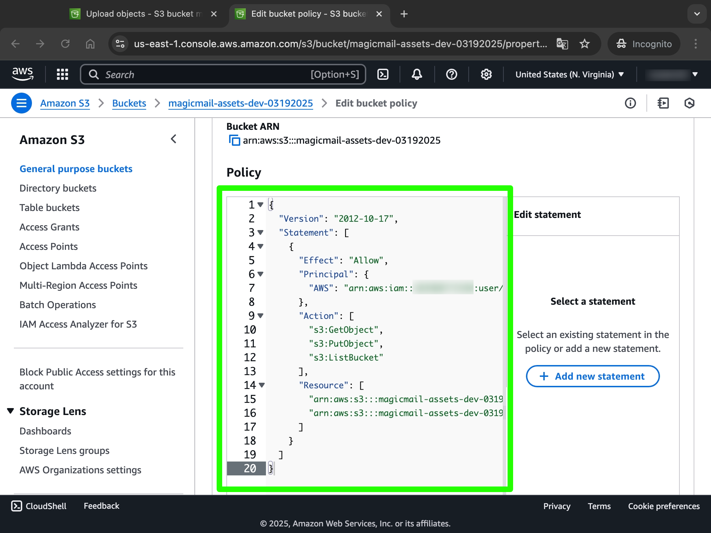
Screenshot of the Bucket Policy editor section
"Here you could add a JSON policy. For example, this policy would allow our 'MagicMailDeveloper' IAM user to list the bucket contents and read/write objects:"
xxxxxxxxxx"Important: You would need to replace ACCOUNT_ID_HERE with your actual 12-digit AWS account number and magicmail-assets-dev-unique123 with your actual bucket name. We won't apply this policy now, as your IAM user already has administrative access. In real projects, we'd use much more specific, least-privilege policies defined via IAM and potentially bucket policies, often managed through our CDK code."
S3 Static Website Hosting (Brief Overview)
"One of S3's powerful features is hosting static websites," Maya explained, navigating to the 'Properties' tab of the bucket.
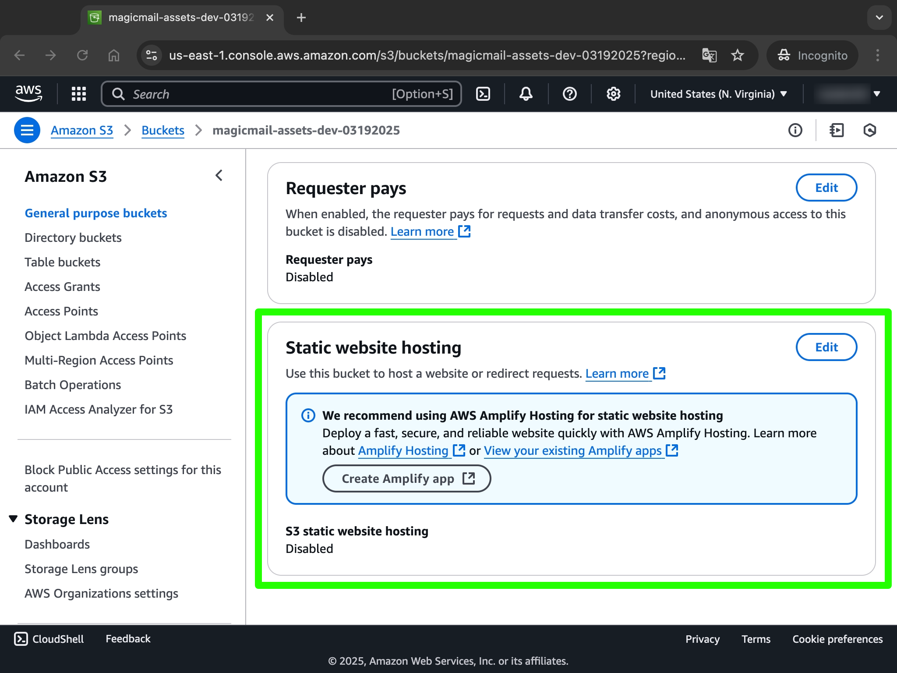
Screenshot showing the 'Static website hosting' section on the Properties tab, likely showing it as Disabled
"If you scroll down, you'll find the Static website hosting section. Here, you can enable the feature, specify an index document (like index.html) and an error document. This makes S3 serve your files directly as a website. We'll use this later for MagicMail's frontend, likely in combination with CloudFront."
S3 Storage Classes and Lifecycle Management (Brief Overview)
"Remember the different storage classes?" Maya asked. "They help optimize costs based on how frequently you access data."
Diagram illustrating the main S3 storage classes and their general use cases/costs. You should verify the current list and details at aws.amazon.com/s3/storage-classes/ as these can evolve.
"The main ones range from S3 Standard (frequent access) down to S3 Glacier Deep Archive (long-term archival, slow retrieval). You choose the class when uploading or use Lifecycle Rules to transition objects automatically."
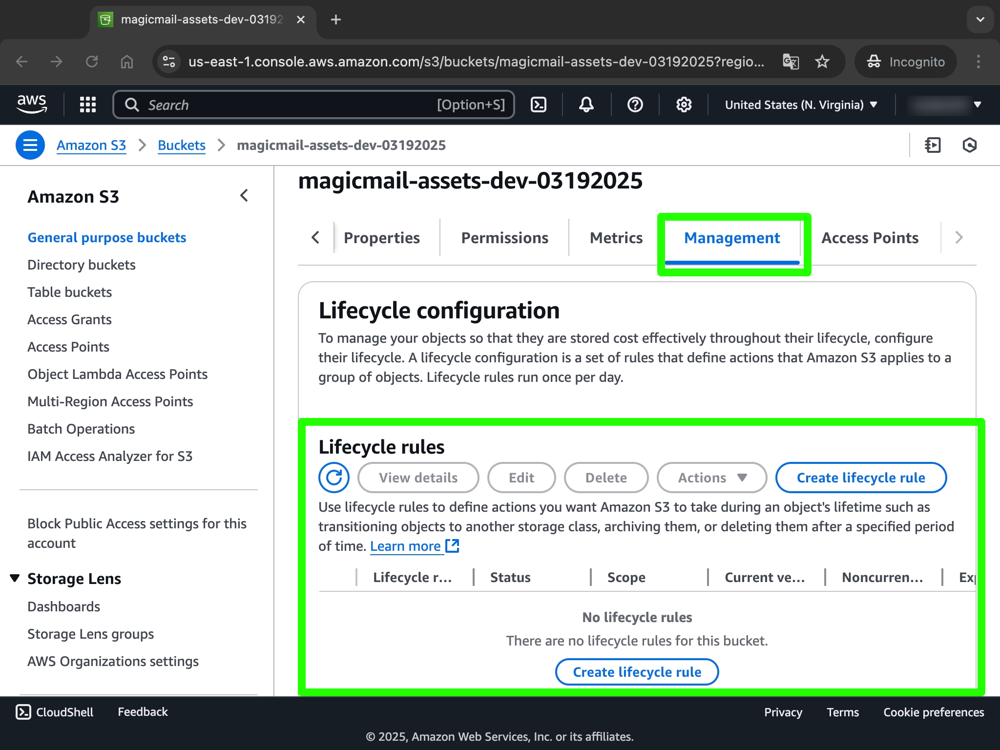
Screenshot showing the 'Lifecycle rules' section under the 'Management' tab
"Under the 'Management' tab, you can create lifecycle rules. For example, you could create a rule to:
Transition objects from Standard to Standard-IA after 90 days.
Transition objects from Standard-IA to Glacier Flexible Retrieval after 365 days.
Permanently delete old versions of objects after 60 days.
These rules help automate cost optimization and data retention policies."
Understanding S3 Pricing (Brief Overview)
"Let's briefly talk about S3 pricing," Maya said, opening a new page on her tablet. "Understanding the cost model is important for making architectural decisions."
Diagram or list showing S3 cost components
"S3 costs have several components:
Storage: Per GB per month, varying by storage class and region.
Requests & Data Retrieval: Cost per request (PUT, GET, LIST, etc.), varying by request type and storage class. Retrieving data from infrequent/archive tiers can have higher per-GB costs.
Data Transfer: Data transferred OUT of S3 to the internet usually incurs costs (data transfer IN is generally free). Transfer between S3 and other AWS services in the same region is often free.
Management Features: Some features like S3 Inventory, Analytics, or Object Lock might have associated costs."
"For our development environment, costs will be minimal. But understanding the model is key for optimizing production costs later."
S3 Best Practices and Common Patterns
"Before we wrap up, let's discuss some S3 best practices that we'll apply to MagicMail," Maya said, bringing up a final slide on her tablet.
Checklist graphic summarizing S3 best practices
"Here are key best practices for using S3:
Use Globally Unique, Meaningful Bucket Names.
Enable Versioning for important buckets to protect against accidental deletion/modification.
Use Block Public Access unless you explicitly need public access (like for a website).
Implement Least Privilege Access Controls using IAM and Bucket Policies. Avoid ACLs where possible.
Enable Default Encryption (SSE-S3 is a good default).
Utilize Storage Classes and Lifecycle Policies to optimize costs based on access patterns.
Use Tags for organization and cost allocation.
Consider CloudFront for distributing frequently accessed content globally.
Monitor Usage using CloudWatch metrics and S3 Storage Lens.
"We've already applied several of these today!"
Cleaning Up and Next Steps
"That covers the essentials of AWS's global infrastructure and our first dive into S3 using the console," Maya said, closing her tablet.
"Since this was a learning exercise using the console, let's clean up the bucket we created to avoid any potential minor costs and keep our account tidy. Crucially, do NOT delete the CDKToolkit bucket."
Maya guided Ethan through the process: "First, you need to empty the bucket. Go into the bucket, select all folders and files, and choose 'Delete'."
([Note: Placeholder - Insert screenshot of the S3 object deletion confirmation dialog, requiring typing 'permanently delete'])
"You'll need to confirm by typing permanently delete. Once the bucket is empty, go back to the main S3 bucket list, select the bucket you created (e.g., magicmail-assets-dev-...), and click Delete."

Screenshot of the S3 bucket deletion confirmation dialog, requiring typing the bucket name
"Again, you'll need to confirm by typing the bucket name. Double-check you are deleting the correct bucket and NOT the one starting with cdk- created during bootstrap!"
As they navigated, Maya pointed to the cdk- bucket. "See this one? cdk-hnb659fds-assets-123456789012-us-east-1 or similar? That's the bootstrap bucket. It stores assets CDK needs for deployments. Deleting it would break your CDK deployment capability, and you'd need to re-bootstrap. Always leave CDK-managed resources alone unless you're cleaning up via CDK itself."
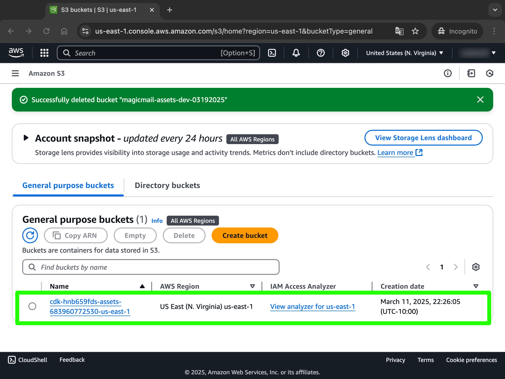
Screenshot of S3 bucket list highlighting the CDKToolkit bucket and warning against deleting it
After confirming the deletion of their practice bucket, Maya continued, "In our next session, we'll explore Infrastructure as Code concepts using CloudFormation. We'll recreate this same S3 bucket, but by writing a template file instead of clicking through the console. This will be our first step into automating infrastructure creation."
Ethan nodded, closing his notebook. "I'm starting to see how all these pieces connect. The global infrastructure provides the foundation, and services like S3 give us building blocks. Defining them manually helps understand them, but I see why automation is needed."
"Exactly," Maya smiled. "AWS gives us powerful tools, and IaC helps us use them effectively and consistently. Next stop, CloudFormation!"
Ethan's Homework
Using the AWS Console, create a new S3 bucket (give it a unique name).
Enable versioning on this new bucket.
Upload a simple text file to the bucket.
Upload a modified version of the same text file with the same name. Check the bucket in the console to see how versioning handles this (you should be able to view/list versions).
(Optional) Try creating a simple lifecycle rule on the bucket (e.g., expire current versions of objects after 7 days).
Remember to empty and delete this practice bucket when you are finished to keep your account clean.
Key Takeaways
AWS's global infrastructure consists of Regions, Availability Zones (AZs), and Edge Locations, enabling global reach and high availability.
Choosing the right Region involves considering latency, compliance, service availability, and cost.
Amazon S3 is a highly durable and available object storage service.
Data in S3 is stored in globally unique buckets as objects identified by keys.
Key S3 features include Storage Classes, Versioning, Lifecycle Policies, fine-grained Access Controls, Encryption, and Static Website Hosting.
Following S3 best practices (like enabling versioning, blocking public access by default, using appropriate storage classes) is crucial.
Never manually delete the CDKToolkit bootstrap bucket.
Looking Ahead
In the next chapter, Maya will introduce Ethan to Infrastructure as Code (IaC) concepts using AWS CloudFormation, demonstrating how to define the S3 bucket using a template file instead of the console.
AWS Services Introduced
AWS Global Infrastructure: The physical foundation of AWS (Regions, AZs, Edge Locations).
Amazon CloudWatch: (Mentioned briefly for monitoring S3) AWS's monitoring and observability service for collecting metrics, logs, and setting alarms.
Chapter 4
Infrastructure as Code Concepts
Maya and Ethan settled into a quiet corner of the company's innovation lab. Unlike their previous coffee shop meetings, today they needed access to large display screens to review code side by side. Maya had prepared several examples on her laptop while Ethan unpacked his notebook.
"Last time we created an S3 bucket for MagicMail's assets using the AWS Console," Maya began, pulling up the AWS Management Console on the screen. "We clicked through forms, checked boxes, and entered values into fields."
Ethan nodded. "It was straightforward enough for one bucket. But I imagine doing that for our entire architecture would be tedious."
"More than tedious—it would be error-prone, hard to replicate, and nearly impossible to version control," Maya replied. "That's why today we're going to recreate that same S3 bucket, but using Infrastructure as Code."
Maya opened a blank document on her screen. "By the end of today, you'll understand why Infrastructure as Code is transforming how we build cloud systems, and you'll write your first CloudFormation template. This will be a stepping stone before we move on to the more powerful AWS CDK."
Understanding Infrastructure as Code (IaC)
"Let's start with the fundamentals," Maya said. "What exactly is Infrastructure as Code, or IaC?"
She started typing a definition on the screen:
Infrastructure as Code (IaC) is the practice of managing and provisioning computing infrastructure through machine-readable definition files (code!), rather than through physical hardware configuration or interactive configuration tools (like clicking in a console).
"In simpler terms," she continued, "instead of clicking buttons in a web console, we write code that describes what our infrastructure should look like. Then we use tools to automatically turn that code into actual cloud resources."
"So it's like moving from manual assembly to automated manufacturing," Ethan suggested.
"That's an excellent analogy!" Maya smiled. "Just as automated manufacturing brought consistency, scalability, and quality control to physical production, IaC brings those same benefits to infrastructure deployment."
Benefits of Infrastructure as Code
Maya pulled up a new slide on the screen with a list of benefits.
Graphic listing IaC benefits
"Let's discuss why IaC has become the standard for modern cloud deployments:
Consistency & Reproducibility: When infrastructure is defined as code, you get the same result every time you deploy it. This eliminates configuration drift and the 'it works on my machine' problem for infrastructure.
Version Control: Infrastructure code can be stored in version control systems (like Git) alongside your application code. This gives you a history of changes, allows collaboration, and enables rollbacks.
Automation: Deployments, updates, and teardowns can be fully automated through CI/CD pipelines, reducing manual effort and human error.
Speed & Efficiency: Automated provisioning is much faster than manual configuration, allowing teams to deliver infrastructure and applications more quickly.
Reusability: Code allows you to create reusable templates or modules for common infrastructure patterns, promoting consistency and reducing duplication.
Documentation: The IaC code itself serves as living documentation of your infrastructure configuration.
Testing: Infrastructure code can often be linted, validated, and sometimes even tested before deployment, catching errors early.
Collaboration: Teams can review infrastructure changes using standard code review processes (like pull requests).
Scalability: It's often as easy to deploy 100 identical environments (e.g., for testing or different tenants) as it is to deploy one.
Disaster Recovery: In a disaster scenario, IaC allows you to quickly recreate your entire infrastructure stack in a different region from your code."
"These benefits become crucial as infrastructure complexity grows," Maya added. "For a system like MagicMail with multiple microservices, databases, and APIs, managing it all manually would be unsustainable."
Ethan nodded, jotting notes. "It makes perfect sense. Treat infrastructure like software."
Declarative vs. Imperative Approaches
Maya drew a simple diagram on the whiteboard, creating two columns.
Diagram contrasting Declarative ('What') vs. Imperative ('How') IaC
"There are two main approaches to Infrastructure as Code: declarative and imperative," she explained.
"In a declarative approach (the 'What'), you define the desired end state of your infrastructure—what you want it to look like. The IaC tool is responsible for figuring out how to achieve that state. You say, 'I want an S3 bucket with versioning enabled and these specific tags,' and the tool creates it if it doesn't exist, updates it if it differs, or leaves it alone if it already matches.
In an imperative approach (the 'How'), you write scripts that specify the exact sequence of commands needed to achieve the desired state. You might write code like 'Check if bucket exists; if not, run the command to create the bucket; then run the command to enable versioning; then run the command to add tags.'"
"What's the advantage of one over the other?" Ethan asked.
"Declarative approaches tend to be more robust and easier to manage for infrastructure," Maya replied. "You don't have to explicitly handle all possible starting states or the exact order of operations. You declare the target state, and the tool manages the transitions. This makes the definitions more concise and less prone to errors when dealing with complex dependencies or updates."
"AWS CloudFormation, which we'll start with today, is declarative. You describe your desired resources in a template, and CloudFormation manages the lifecycle (create, update, delete) to match that description. AWS CDK, which we'll use later, is also declarative at its core because it generates CloudFormation templates, but it lets you use the power of imperative programming languages (like TypeScript) to generate those declarative templates."
Introduction to AWS CloudFormation
Maya opened the AWS CloudFormation console in her browser.
Screenshot of the CloudFormation console dashboard
"CloudFormation is AWS's native Infrastructure as Code service. It allows you to model, provision, and manage AWS and third-party resources by treating infrastructure as code. It uses template files written in either JSON or YAML format to define the resources you want to provision."
She opened a simple YAML file in her editor (Create a YAML file if you don't have it. Name it magical-assets.yaml).
"A CloudFormation template describes your desired resources and their dependencies so you can launch and configure them together as a stack. The most important section is usually the Resources section, which defines the AWS resources you want to create (like S3 buckets, EC2 instances, DynamoDB tables, etc.). Each resource has a Logical ID (a name you give it within the template), a Type (like AWS::S3::Bucket or AWS::EC2::Instance), and Properties that configure that specific resource."
Maya began typing a simple CloudFormation template in YAML:
xxxxxxxxxx"This simple template defines just one resource: an S3 bucket named magicmail-assets-dev-cfn-example with versioning enabled and default server-side encryption (SSE-S3). It's similar to the bucket we created manually in the last chapter, but now it's defined in code."
CloudFormation Concepts
"Before we deploy this, let's understand some key CloudFormation concepts," Maya said, pulling up another diagram.
Diagram showing relationship: Template -> Deployed as -> Stack (containing Resources), with arrows for Change Sets and Drift Detection
Template: The JSON or YAML file containing your infrastructure definition (the code). It describes the resources, their properties, dependencies, parameters, outputs, etc.
Stack: When you deploy a template, CloudFormation creates a stack. A stack is a collection of AWS resources managed as a single unit. You create, update, or delete a stack, and CloudFormation provisions, updates, or deletes the underlying resources accordingly. Think of the template as the blueprint and the stack as the actual building constructed from that blueprint.
Resources: The individual AWS components defined within your template and provisioned as part of a stack (e.g., an
AWS::S3::Bucket, anAWS::Lambda::Function).Change Sets: Before applying updates to an existing stack, you can create a change set. CloudFormation compares your modified template with the currently deployed stack and shows you a preview of exactly what resources will be added, modified, or deleted. This is a crucial safety mechanism to review changes before execution.
Stack Policies: Optional JSON documents that protect specified stack resources from unintentional updates or deletions during a stack update.
Drift Detection: CloudFormation can detect if resources within a stack have been modified manually (outside of CloudFormation) since the last stack operation. This difference is called
driftand helps identify unintended manual changes.
"So a stack is like a live instance of a template?" Ethan asked.
"Exactly. The template is the definition, and the stack is the collection of live AWS resources created based on that definition."
Creating a Complete CloudFormation Template
"Let's enhance our template to be more flexible and robust, incorporating more features we used previously," Maya said, continuing to edit the YAML file.
xxxxxxxxxx"I've added several important elements," Maya explained.
"First, the Parameters section. This allows us to pass in values when we deploy the stack, making the template reusable. Here, we define EnvironmentName which defaults to dev but can be overridden."
xxxxxxxxxx"We use this parameter in the BucketName property using the !Sub intrinsic function. !Sub substitutes variables within a string. We're also using ${AWS::AccountId}, which is a pseudo parameter provided by CloudFormation representing the AWS account ID where the stack is being deployed. We include the Account ID because S3 bucket names must be globally unique across all AWS accounts, so this helps ensure our bucket name doesn't collide with one in another account. We also include the EnvironmentName to differentiate buckets between environments (dev, test, prod)."
xxxxxxxxxx"We've added the PublicAccessBlockConfiguration to match the secure settings from the console, and included Tags using the EnvironmentName parameter value via the !Ref function."
xxxxxxxxxx"Finally, the Outputs section defines values that CloudFormation will display after the stack is created. These outputs can also be exported (using the Export field) so they can be referenced by other CloudFormation stacks. We're outputting and exporting the bucket's actual name and its ARN, which might be needed by other parts of our MagicMail infrastructure later."
xxxxxxxxxx"I see we're using !Ref, !GetAtt, and !Sub," Ethan noted.
"Good observation," Maya replied. "These are CloudFormation intrinsic functions used within templates:
!Ref: Returns the value of a parameter (like!Ref EnvironmentName) or the default identifier of a resource (like!Ref MagicMailAssetsBucket, which returns the physical bucket name).
!GetAtt: Retrieves the value of a specific attribute from a resource (like!GetAtt MagicMailAssetsBucket.Arnto get the bucket's ARN). You need to check the CloudFormation documentation for the available attributes for each resource type.
!Sub: Substitutes variables in a string. Variables are denoted by${VariableName}. It can reference parameters, resource logical IDs, resource attributes (using dot notation like${MagicMailAssetsBucket.Arn}), and pseudo parameters (like${AWS::AccountId},${AWS::Region},${AWS::StackName}).
There are other useful intrinsic functions like !Join (to combine strings), !Split (to split strings), !Select (to pick an element from a list), and conditional functions (!If, !Equals, !Not, etc.) that provide more logic within your templates."
Deploying a CloudFormation Stack (Console)
"Now let's deploy our template using the AWS console to create the S3 bucket," Maya said, switching to the CloudFormation console.
Screenshot showing the 'Create stack' button
"Click Create stack (with new resources). Choose Template is ready and Upload a template file. Select the YAML file we just created."

Screenshot showing the template file uploaded
"Click Next. Give your stack a name, like magicmail-assets-dev-stack. You'll see the EnvironmentName parameter with its default value 'dev'. You could override it here if needed."

Screenshot showing the 'Specify stack details' page with Stack name and Parameters section
"Click Next. On the 'Configure stack options' page, you can add tags to the stack itself (separate from resource tags), configure stack policies, rollback behavior, and notification options. We'll leave these as default for now."

Screenshot showing the 'Configure stack options' page
"Click Next. Review all your choices on the final page. At the bottom, acknowledge that CloudFormation might create IAM resources (though our template doesn't currently) and click Create stack."

Screenshot showing the final review page before creation
"CloudFormation now starts provisioning the resources defined in the template. You can monitor the progress in the 'Events' tab for the stack."
Screenshot showing the CloudFormation stack events during creation, ending with CREATE_COMPLETE for the stack
"Once the status reaches CREATE_COMPLETE, navigate to the 'Outputs' tab for the stack. You should see the BucketName and BucketArn we defined."
Screenshot showing the 'Outputs' tab with the bucket name and ARN
"And if we go to the S3 console, we should see our new bucket, named according to the pattern we specified, with versioning enabled and the correct tags."

Screenshot of the S3 console showing the created bucket and confirming its properties like name, versioning, tags
Updating Infrastructure with CloudFormation
"What if we want to modify our infrastructure?" Ethan asked. "Do we have to delete everything and start over?"
"Not at all," Maya replied. "That's a key benefit of IaC. You modify the code (the template) and redeploy. CloudFormation figures out what changed and applies only those changes. Let's add a lifecycle rule to our bucket to transition objects to infrequent access storage after 90 days."
Maya updated the Properties section of the MagicMailAssetsBucket resource in the template:
xxxxxxxxxx"This LifecycleConfiguration block adds a rule to automatically transition objects to the STANDARD_IA storage class 90 days after they are created, which can help reduce storage costs for older assets."
"Now let's update our stack. In the CloudFormation console, select the stack (magicmail-assets-dev-stack) and click Update."
Screenshot showing the 'Update' button on the stack details page
"Choose Replace current template, upload your modified YAML file, and click Next through the parameter and stack options pages (we aren't changing those)."
Screenshot showing the 'Replace current template' option during stack update
"Before applying the changes, CloudFormation will generate a Change Set. Review the changes listed – it should show that the MagicMailAssetsBucket resource will be 'Modified' to add the LifecycleConfiguration."
Screenshot showing the Change Set preview, highlighting the modification to the S3 bucket resource
"This preview step is critical. Always review the change set carefully before executing an update, especially in production. Once you're satisfied, click Update stack."
"CloudFormation will now apply the update."
Screenshot showing the stack status as UPDATE_IN_PROGRESS
"Once it reaches UPDATE_COMPLETE, you can verify in the S3 console that the bucket now has the lifecycle rule configured under its 'Management' tab."
Screenshot of the S3 bucket's 'Management' tab showing the configured lifecycle rule
Using the AWS CLI for CloudFormation
"We can also manage CloudFormation stacks entirely from the command line using the AWS CLI," Maya explained, opening a terminal window. "This is essential for automation and CI/CD pipelines."
"To create a stack using the CLI, you use the aws cloudformation deploy command. This command conveniently packages creating and updating into one action:"
xxxxxxxxxx"Let's break this down:
--template-file: Specifies the path to your template file.--stack-name: The name for the stack.--parameter-overrides: Allows you to provide values for parameters defined in the template.--tags: Allows you to add tags to the stack itself.--capabilities: Some templates might require explicit acknowledgement of capabilities, such as creating IAM resources (CAPABILITY_IAMorCAPABILITY_NAMED_IAM) or macros (CAPABILITY_AUTO_EXPAND). It's good practice to include these if your template might create such resources, even if our current one doesn't create IAM roles directly.
If the stack doesn't exist, deploy creates it. If it does exist, deploy creates and executes a change set to update it based on the template provided."
"To delete a stack via the CLI:"
xxxxxxxxxx"The CLI approach is powerful for scripting and automating your infrastructure deployments."
CloudFormation Best Practices
"Before we move on from CloudFormation, let's cover some best practices," Maya said, pulling up another list.
Graphic summarizing CloudFormation best practices
Use Version Control: Store your templates in Git or another version control system.
Validate Templates: Use
aws cloudformation validate-templateor linters (likecfn-lint) to catch syntax errors before deployment.Use Parameters for Flexibility: Parameterize environment-specific values (like instance sizes, domain names, environment names) to make templates reusable. Avoid hardcoding values.
Use Outputs for Cross-Stack References: Use outputs and exports (
Export: Name: ...) to share resource information between stacks. Use!ImportValuein other templates to consume exported values.Review Change Sets: Always create and review change sets before updating stacks to understand the impact of your changes.
Keep Templates Focused: Break down large, complex infrastructure into smaller, more manageable stacks focused on specific components or lifecycles.
Use Descriptive Naming: Use clear logical IDs for resources and meaningful descriptions in parameters, resources, and outputs.
Tag Resources: Use tags consistently for cost allocation, automation, and organization.
Understand Deletion Policies: Use
DeletionPolicy: Retainon critical stateful resources (like databases or S3 buckets with important data) to prevent accidental data loss when a stack is deleted. The default is oftenDelete(except for some resources like non-empty S3 buckets).
From CloudFormation to AWS CDK
"CloudFormation is powerful and fundamental to AWS IaC, but writing and maintaining large JSON or YAML templates can become complex and verbose," Maya said. "Managing logic, loops, or creating truly reusable components can be challenging."
Diagram showing CDK code -> (Synth) -> CloudFormation Template -> (Deploy) -> AWS Resources
"That's where the AWS Cloud Development Kit (CDK) comes in. CDK lets you define your infrastructure using familiar programming languages like TypeScript, Python, Java, C#, or Go. Your CDK code generates CloudFormation templates behind the scenes, but you get the full power of a real programming language."
"This means you can:
Use variables, loops, conditionals, functions, classes, and inheritance.
Create strongly-typed, reusable infrastructure components (called Constructs).
Benefit from IDE features like autocompletion and inline documentation.
Write unit tests for your infrastructure code.
Often write significantly less code compared to raw CloudFormation for the same result, thanks to higher-level abstractions provided by CDK."
"In our next session, we'll dive into TypeScript fundamentals, which will prepare us to use CDK effectively for building MagicMail's infrastructure in a much more expressive way."
Cleaning Up and Next Steps
"Let's clean up the resources we created today to avoid any unnecessary charges," Maya said, navigating back to the CloudFormation console.
Screenshot showing the 'Delete' button for a selected stack
"Select the stack we created (magicmail-assets-dev-stack or magicmail-assets-dev-cli) and click Delete. Confirm the deletion."

Screenshot showing the stack status as DELETE_IN_PROGRESS
"CloudFormation will now delete the resources managed by the stack, including the S3 bucket (since we didn't set a DeletionPolicy: Retain)."
"For homework, I'd like you to browse the CloudFormation documentation for a few other resource types we'll likely use later, like AWS::Lambda::Function and AWS::DynamoDB::Table. Just look at their properties to get a feel for how different resources are defined in CloudFormation templates. Don't worry about understanding every detail yet."
Ethan nodded, closing his notebook. "I'm starting to see the power of defining infrastructure in code. CloudFormation seems capable, but I can already imagine how using a real programming language with CDK will make things even better."
"Exactly," Maya smiled. "CloudFormation is the engine, and CDK provides a more developer-friendly way to interact with it. Mastering IaC is a key skill for cloud development, and you're well on your way."
Ethan's Homework
Review the CloudFormation template created in this chapter. Identify the
Parameters,Resources, andOutputssections.Look up the CloudFormation documentation for
AWS::Lambda::Function. What are some key properties required to define a Lambda function? (e.g., Handler, Role, Code, Runtime).Look up the CloudFormation documentation for
AWS::DynamoDB::Table. What properties are needed to define the primary key? (e.g., KeySchema, AttributeDefinitions).(Optional) Try deploying the final template from this chapter using the AWS CLI
aws cloudformation deploycommand, then delete it usingaws cloudformation delete-stack.
Key Takeaways
Infrastructure as Code (IaC) manages infrastructure through code, offering consistency, automation, version control, and scalability.
AWS CloudFormation is AWS's native declarative IaC service using JSON or YAML Templates.
Templates define Resources, Parameters, and Outputs. Deployed templates create Stacks.
Change Sets provide crucial previews before updating stacks.
CloudFormation intrinsic functions (
!Ref,!GetAtt,!Sub, etc.) add logic to templates.Stacks can be managed via the AWS Console or the AWS CLI (
deploy,delete-stack).Following best practices (version control, validation, parameters, outputs, change sets, focused stacks,
DeletionPolicy) is vital.AWS CDK builds upon CloudFormation, allowing infrastructure definition in programming languages for greater expressiveness and reusability.
Looking Ahead
In the next chapter, Maya will introduce Ethan to TypeScript fundamentals, covering the essential programming concepts needed to effectively use the AWS CDK for building MagicMail's infrastructure.
AWS Services Introduced
No new services (focused on CloudFormation concepts).
Chapter 5
TypeScript Fundamentals
Maya had booked a small conference room for their fifth session. When Ethan arrived, he found her setting up her laptop and connecting it to the large display. The room's whiteboard was already covered with TypeScript syntax examples.
"Today's session is going to be a bit different," Maya said as Ethan took a seat. "Before we dive deeper into CDK, we need to get comfortable with TypeScript. It's the language we'll use to define our infrastructure."
Ethan opened his laptop. "I'm familiar with JavaScript, but I've never used TypeScript before. Is it very different?"
"TypeScript is a superset of JavaScript," Maya explained, pointing to a simple diagram on the whiteboard. "That means all valid JavaScript code is also valid TypeScript code. However, TypeScript adds features on top of JavaScript, most importantly static typing, along with other enhancements like interfaces, enums, and better support for object-oriented programming. These features are used during development to improve code quality and catch errors early, but when compiled, they are transformed into standard JavaScript, ensuring compatibility with any JavaScript runtime."

Diagram showing TypeScript as a superset of JavaScript, and compiles to JavaScript
"So we're learning TypeScript specifically to use with CDK?" Ethan asked.
"Exactly. AWS CDK was designed with TypeScript as its primary language, though it supports others too. TypeScript's static typing helps us catch errors during development and compilation, before we deploy our infrastructure, which can save a lot of time and prevent mistakes. It also enables better tooling, like autocompletion and refactoring in our code editor," Maya explained. "Furthermore, CDK uses TypeScript's object-oriented features (like classes and interfaces) extensively to create its component model for infrastructure. Understanding these concepts is essential for working effectively with CDK constructs in the next chapter."
Setting Up a TypeScript Project
"Let's start by setting up a basic TypeScript project," Maya suggested. "We won't build infrastructure yet, but we'll use this project to practice TypeScript concepts by modeling some core parts of our MagicMail domain."
"Think of these models as digital blueprints for the key entities in our system," she continued. "Just like an architect creates models before building a house, we'll create code models for things like magical creatures, packages, and deliveries. This helps clarify our understanding of the business requirements and gives us practical examples for learning TypeScript."
She opened a terminal window. "First, let's create a new directory for this exercise and initialize a Node.js project using npm (Node Package Manager)."
xxxxxxxxxx
Screenshot showing the creation of package.json
"The npm init -y command creates a basic package.json file. This file tracks project details, dependencies (libraries our code uses), and scripts (commands to build or run our project)," Maya explained. "Now, let's install TypeScript itself as a development dependency."
xxxxxxxxxx"The --save-dev (or -D) flag tells npm that TypeScript is only needed for development, not for running the final compiled JavaScript code. Next, we'll initialize the TypeScript configuration:"
xxxxxxxxxx
Screenshot showing the creation of tsconfig.json
"This command creates a tsconfig.json file, which contains settings that control how the TypeScript compiler (tsc) behaves," Maya said, opening the newly created file. "Let's modify a few key settings for our project."
Maya edited the tsconfig.json file:
xxxxxxxxxx"Let me explain some key settings," Maya said:
"target": "ES2018": Specifies the JavaScript version our TypeScript code will be compiled down to. ES2018 is well-supported in modern Node.js environments, which CDK uses."module": "commonjs": Defines the module system to use for the compiled JavaScript (Node.js uses CommonJS)."strict": true: Enables a suite of strict type-checking options. This is highly recommended as it helps catch many potential errors during development."esModuleInterop": true: Improves compatibility between different types of JavaScript modules."outDir": "./dist": Tells the compiler to put the output JavaScript files into a directory nameddist."declaration": true: Tells the compiler to also generate corresponding.d.tsfiles, which describe the types in our compiled code (useful for libraries)."include": ["src/**/*"]: Specifies that TypeScript should compile all files within thesrcdirectory."exclude": [...]: Specifies files or directories to ignore during compilation.
"Now, let's create our source directory structure. We'll organize our code into logical folders, a practice we'll also follow in our CDK projects."
xxxxxxxxxx"Perfect. Now we're ready to write our first TypeScript code."
First TypeScript Program: Hello World
"Let's start with the simplest possible TypeScript program to see the core concept in action," Maya suggested, creating a new file called src/hello.ts.
xxxxxxxxxx"This simple program highlights the key feature of TypeScript: type annotations," Maya explained. "Notice : string after the name parameter and after the function definition? These annotations explicitly tell TypeScript (and other developers, and our editor) what type of data is expected or returned."
"How does this actually run?" Ethan asked.
"Good question. TypeScript code doesn't run directly in Node.js or browsers. It needs to be compiled into standard JavaScript first. Let's do that."
xxxxxxxxxx
Screenshot showing the compilation command and the 'Hello, Magical World!' output from the node command
"The first command, npx tsc src/hello.ts, invokes the TypeScript compiler (tsc) on our file. By default, it creates a corresponding .js file (src/hello.js) in the same directory (though our tsconfig.json would put it in dist if we compiled the whole project). The second command, node src/hello.js, runs the generated JavaScript file."
"Let's look at the generated hello.js:"
xxxxxxxxxx"Notice how all the type annotations (: string) are gone?" Maya pointed out. "TypeScript's type system exists only during development and compilation. It helps us write safer, more maintainable code, but the final output is plain JavaScript that can run anywhere."
"Now, try uncommenting the last line in src/hello.ts (console.log(greet(42));) and run the compilation command npx tsc src/hello.ts again."
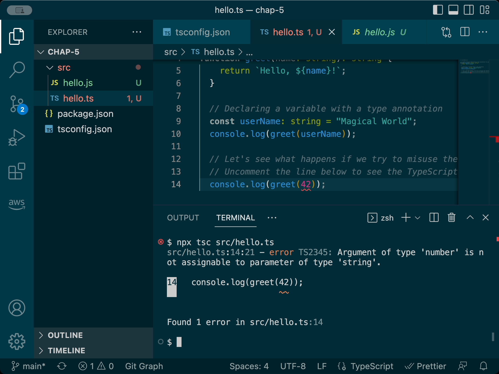
Screenshot showing the TypeScript error: "Argument of type 'number' is not assignable to parameter of type 'string'.
"See that error?" Maya asked. "TypeScript analyzed the code and detected that we're trying to pass a number (42) to a function that explicitly expects a string. It stops the compilation and tells us about the mistake. This immediate feedback is incredibly valuable, especially in large projects like our CDK infrastructure where such type mismatches could lead to deployment failures or runtime errors."
"This type-checking capability is why we use TypeScript with CDK. CDK provides many predefined types for AWS resources and their configurations. TypeScript helps ensure we use them correctly, catching errors early in the development cycle."
TypeScript Basics: Types, Interfaces, and Enums
"Now that we understand the basic workflow, let's model our MagicMail domain using more TypeScript features," Maya said. "We'll start by defining the structure of our data using interfaces and enums."
"This approach focuses on defining the 'shape' of our data first," Maya explained. "We'll use enum for fixed sets of values and interface to describe the structure of our objects like creatures and packages."
Maya created a new file at src/models/creature.ts. (If you didn't create subdirectories earlier, create src/model now).
"In MagicMail, magical creatures deliver packages. Let's create a TypeScript model for them."
xxxxxxxxxx"Let's break this down," Maya said, drawing on the whiteboard.
Diagram illustrating how enums define constants, interfaces define object shapes, and the TS compiler checks objects against interfaces
"First, we defined two enum types: CreatureType and CreatureCapability. An enum (enumeration) in TypeScript is a way to define a set of named constants. It's perfect for representing fixed sets of values, like the types of creatures we support or their possible abilities. Using enums (CreatureType.DRAGON) instead of raw strings ('dragon') provides several benefits:
Type Safety: Prevents typos (e.g.,
'grifin'instead of'griffin'). TypeScript will error if you try to assign an invalid value.Readability: Makes the code clearer about the intended values.
Refactoring: Easier to rename or change values later.
Autocompletion: Code editors can suggest valid enum members.
xxxxxxxxxx"Next, we defined the Creature interface. An interface in TypeScript acts like a contract or a blueprint for objects. It describes the expected 'shape' of an object—what properties it must have, what properties are optional, and what the types of those properties should be."
xxxxxxxxxx"Key points about the interface:
It defines the structure, but doesn't create objects itself.
Properties are required by default. Adding a
?after the property name (likelastLocationUpdate?) makes it optional.We can use primitive types (
string,number,boolean), complex types (Date, other interfaces/objects), enum types (CreatureType), and arrays (CreatureCapability[]).We used the
exportkeyword. This makes the enums and interface available for use in other files via theimportstatement, enabling modular code."
Ethan studied the code. "So the interface tells TypeScript what a valid Creature object should look like, and the enums define the allowed values for certain properties?"
"Exactly," Maya replied. "And TypeScript checks our code against these definitions:
During Development: Your code editor (like VS Code) uses this information to provide autocompletion and highlight errors as you type.
During Compilation: The
tsccompiler rigorously verifies that all objects we create or use match their declared types or interfaces.
This helps catch errors before the code even runs."
"When we work with CDK, we'll use interfaces provided by the CDK library (e.g., s3.BucketProps) to configure AWS resources. TypeScript will ensure we provide the correct properties with the correct types."
"Now let's model packages," Maya continued, creating src/models/package.ts.
xxxxxxxxxx"And finally, deliveries," Maya said, creating src/models/delivery.ts.
xxxxxxxxxx"This file introduces a few more concepts," Maya explained. "First, the import statement allows us to use types (like Creature and Package) defined in other files. This is fundamental to building modular applications."
"Second, we're showing two ways to model related data. The Delivery interface uses IDs (packageId, creatureId) to reference other entities. The DeliveryDetails interface, however, embeds the full Package and Creature objects, which might be useful when displaying complete delivery information. This pattern of referencing by ID versus embedding full objects is common in system design, and we'll see similar choices when defining relationships between AWS resources in CDK."
Working with Types: Creating Objects and Functions
"Now that we've defined our models, let's write some code that uses them," Maya said, creating src/examples.ts.
xxxxxxxxxx"Now, let's compile and run this. But first, a learning moment about TypeScript compilation," Maya said deliberately. "What happens if we try to compile only this single file, ignoring our project's tsconfig.json?"
xxxxxxxxxx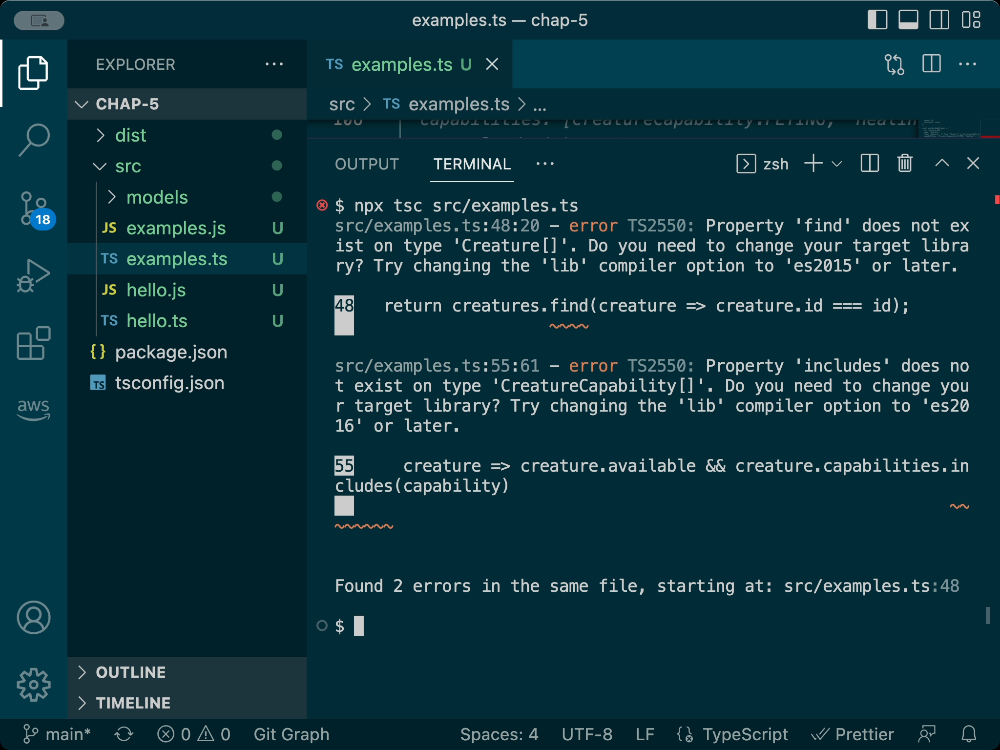
Screenshot showing potential errors like "Cannot find name 'find'." or issues with array methods if default libs aren't included
"You might see errors here," Maya explained. "Depending on the exact defaults TypeScript uses when run without a config file, it might not recognize things like console.log or modern array methods like .find() or .includes(). This demonstrates why relying on the project's tsconfig.json is important – it ensures the compiler knows which JavaScript features and libraries (like ES2018, DOM) are available in our target environment."
"The correct way to compile our code is to compile the entire project based on the tsconfig.json settings. This ensures all files are checked consistently and use the specified language features and libraries."
xxxxxxxxxx"This command reads tsconfig.json, finds all files specified in the include section (our src directory), checks them, and outputs the compiled JavaScript into the outDir (./dist). Now, let's run the compiled example code:"
xxxxxxxxxx
Screenshot showing the correct output: list of flying creatures and details of the found dragon
"This workflow – compiling the whole project with npx tsc and running the output from dist – is exactly how we'll work with our CDK applications. The CDK toolkit actually handles the tsc compilation step automatically when you run commands like cdk synth or cdk deploy, but understanding the underlying process is crucial."
"Let's review the key TypeScript concepts in examples.ts," Maya pointed out:
Typed Arrays:
const creatures: Creature[]explicitly declares an array that can only hold objects matching theCreatureinterface.Typed Functions: Functions like
findCreatureByIdhave type annotations for parameters (id: string) and return values (Creature | undefined). The|creates a union type, meaning the function can return either aCreatureorundefined.Type Inference: Inside the
.forEachloop forflyingCreatures, TypeScript infers that thecreaturevariable is of typeCreaturebecauseflyingCreaturesis known to beCreature[]. This enables autocompletion and type checking within the loop.Type Guards: The
if (foundCreature)check acts as a type guard. Inside theifblock, TypeScript knowsfoundCreaturecannot beundefinedand treats it as typeCreature, allowing safe access to its properties.Compile-Time Errors: The commented-out
badCreatureAttemptandanotherBadAttemptexamples show how TypeScript catches various errors: missing required properties, assigning incorrect types (string instead of enum), using invalid enum values, or adding properties not defined in the interface.
"When we work with CDK, we'll constantly be creating objects that need to conform to specific interfaces (like s3.BucketProps) and calling functions or methods with specific type requirements. TypeScript will be our safety net."
Introduction to Classes
"What we've done so far—defining data structures with interfaces/enums and creating separate functions to operate on that data—is often associated with a more functional programming style," Maya explained. "It keeps data and behavior separate."
"Now let's look at an object-oriented approach using classes. A class defines a blueprint for creating objects that group together related data (called properties) and functions that operate on that data (called methods). This approach is widely used in modern programming because it helps organize code into modular, reusable building blocks — a concept you'll see in action very soon when we start working with CDK."
Maya created a new file at src/services/creature-service.ts (or src/creature-service.ts).
xxxxxxxxxx"A class in TypeScript is a blueprint for creating objects," Maya explained. "It combines:
Properties (Data/State): Variables that hold the object's data (e.g.,
private creatures: Creature[]). Theprivatekeyword restricts access to this property from outside the class, promoting encapsulation.Constructor (Initialization): A special method (
constructor) that runs when you create a new object (instance) from the class using thenewkeyword. It initializes the object's properties.Methods (Behavior): Functions defined within the class that operate on the object's properties (e.g.,
getAllCreatures(),addCreature()). Methods use thethiskeyword to access the instance's properties and other methods."
"To use this class, we'd create an instance of it in another file:"
xxxxxxxxxx"This class-based approach is fundamental to CDK," Maya emphasized. "CDK provides base classes (like cdk.Stack, s3.Bucket, lambda.Function). We create our infrastructure by instantiating these classes (new s3.Bucket(...)) or by creating our own classes that extend these base classes to add custom logic or group resources."
"Let's quickly create a similar service class for packages," Maya said, creating src/services/package-service.ts.
xxxxxxxxxxInheritance: Extending Classes
"Now let's explore inheritance, another crucial object-oriented concept heavily used in CDK," Maya said. "Inheritance allows a class (the child or subclass) to inherit properties and methods from another class (the parent or superclass). The child class can then reuse, extend, or modify the parent's behavior."
"When we work with CDK, we'll frequently extend existing CDK constructs (which are classes) to create our own specialized infrastructure components."
Maya created src/services/delivery-service.ts.
xxxxxxxxxx"Key inheritance concepts demonstrated here:" Maya explained:
extends: ThePriorityDeliveryService extends DeliveryServiceline establishes the inheritance relationship.PriorityDeliveryServiceis the child,DeliveryServiceis the parent.
protected: Properties likedeliveries,creatureService,packageServicein the parent are markedprotected. This allows the child class (PriorityDeliveryService) to access them directly (e.g.,this.deliveries.push(...)), but they remain inaccessible from outside the class hierarchy.
override: When a child class provides its own implementation of a method that already exists in the parent (likecreateDeliveryRequest), using theoverridekeyword makes the intention clear and helps TypeScript verify that the method signature matches the parent's method.
super: Inside the child class method,super.createDeliveryRequest(packageId)can be used to explicitly call the parent class's version of the method. This is useful for extending behavior rather than completely replacing it (though we replaced it here, the fallback shows howsupercould be used).
"This extends pattern is exactly how we'll work with CDK," Maya reiterated. "We'll create our own classes like MagicMailApiStack extends cdk.Stack or MagicMailLambdaFunction extends lambda.Function to build upon CDK's base constructs and add our application-specific logic and configuration."
Putting It All Together: A Simple App Script
"Let's create a simple script to see these services interact," Maya said, creating src/app.ts.
xxxxxxxxxx"To make running this easier, let's add scripts to our package.json for building and starting the app," Maya suggested.
xxxxxxxxxx"These commands add build and start scripts to your package.json.
npm run build: Runstsc, compiling the entire project based ontsconfig.jsoninto thedistdirectory.
npm run start: Runs the compiledapp.jsfile from thedistdirectory using Node.js."
"Now we can compile and run our application simulation:"
xxxxxxxxxx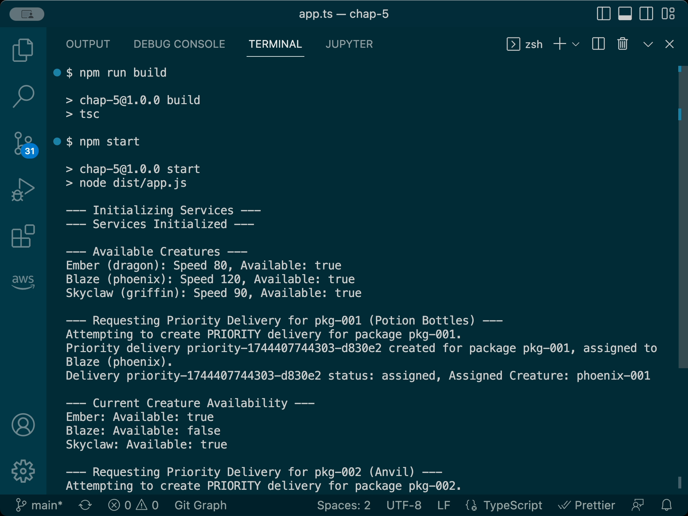
Screenshot showing the output of the npm start command, simulating the delivery requests and availability changes
"This demonstrates how classes and objects interact. We created instances of our services and called their methods to simulate the delivery process. This object-oriented structure, with classes, inheritance, and methods, is precisely how we will structure our CDK code."
To better understand how all the parts of our TypeScript modeling exercise fit together, here's a visual diagram showing the relationships in our code. It illustrates how classes include interfaces to define the shape of their data, how one class extends another through inheritance, and how enums are used within interfaces to constrain values to a known set. It also shows how our main App class calls the various service classes to simulate the system behavior. This kind of structural clarity will carry over into our CDK work, where similar class-based patterns will help us model real cloud infrastructure in code.
Diagram of Class, Interface, and Enum Relationships in TypeScript: A visual overview of how core types and services interact in our simulated delivery system.
TypeScript Best Practices for CDK Development
Maya brought up a slide summarizing key takeaways for using TypeScript with CDK.

TypeScript best practices for CDK
"Based on what we've learned, let's highlight some TypeScript best practices crucial for CDK development:"
Embrace Strict Typing: Always enable
"strict": trueintsconfig.json. Avoid usinganyunless absolutely necessary. Catching type errors at compile time is much better than during deployment.Use Interfaces for Props: Define clear
interfacetypes for the configuration properties (props) passed to your CDK constructs (especially custom ones). This makes usage clear and type-safe.Leverage Enums: Use
enumfor predefined sets of values (like Lambda runtimes, S3 storage classes, environment names) instead of raw strings or numbers.Master Classes and Inheritance: CDK is class-based. Understand how to instantiate classes (
new), extend them (extends), use constructors, and manage visibility (public,private,protected).Use Meaningful Names: Choose clear, descriptive names for variables, functions, classes, interfaces, and enums. CDK code defines real infrastructure, so clarity is paramount.
Modularity: Use
importandexportto organize your code into logical files and modules.Readonly Properties: Where appropriate, use the
readonlymodifier for properties in interfaces or classes that should not be changed after initialization.
Applying TypeScript to CDK Development
"How do these TypeScript concepts map directly to CDK?" Ethan asked.
Maya sketched a quick comparison on the whiteboard.
Diagram mapping TS concepts to CDK usage
"Here's the direct mapping:
Classes: The core building blocks. We'll create instances of CDK classes (
new s3.Bucket(...)) and define our own stacks and custom constructs by extending CDK base classes (class MyStack extends cdk.Stack).Interfaces: Used extensively to define the structure of the
props(properties/configuration) object passed to constructs. For example,s3.Buckettakess3.BucketPropsas its third argument. We'll define interfaces for our own custom construct props.Enums: Used by CDK for predefined options, like
lambda.Runtime.NODEJS_18_X,s3.StorageClass.INFREQUENT_ACCESS, orec2.InstanceClass.T3. Using enums prevents typos and ensures valid values.
Modules (import/export):Used to import CDK library modules (import * as s3 from 'aws-cdk-lib/aws-s3';) and to structure our own CDK code across multiple files (export class MyStack ...).
Basic Types (string, number, boolean, arrays):Used for simple configuration values within props objects.
"The models we created today (Creature, Package) won't be directly used in our CDK infrastructure code, but the TypeScript patterns we used to create them—interfaces, enums, classes, inheritance—are exactly what we'll use when defining our infrastructure with CDK."
Wrapping Up
Maya closed her laptop. "That covers the TypeScript fundamentals most relevant to CDK development. We've explored static typing, interfaces, enums, classes, inheritance, and how they help create structured, maintainable, and safer code."
"Any final questions on TypeScript for now?"
Ethan shook his head. "I think I've got the basics. Interfaces define the shape, enums handle fixed values, and classes bundle data and behavior, which seems key for CDK. I'm ready to see how this applies to actual infrastructure."
"Excellent," Maya smiled. "You're well-prepared. In our next session, we'll finally dive into CDK itself. We'll initialize our first CDK project, understand its structure, and use the TypeScript concepts we learned today to define our S3 asset bucket using CDK constructs."
Ethan's Homework
Refactor the
Creatureinterface to makenameoptional and add a requiredspeciesproperty using theCreatureTypeenum.Create a simple
WorldServiceclass. Give it aprivatearray property to storeCreatureobjects. Add public methods:addCreature(creature: Creature)andfindCreaturesByType(type: CreatureType): Creature[].Create a
FlyingCreatureServiceclass thatextends WorldService. Override theaddCreaturemethod so that it only adds creatures whosecapabilitiesarray includesCreatureCapability.FLYING. (Hint: you might need to make thecreaturesarrayprotectedin the parent class).
Key Takeaways
TypeScript adds static typing to JavaScript, catching errors during compilation, which is crucial for reliable infrastructure code.
Interfaces define object structures (
propsin CDK).Enums provide type-safe constants (resource options in CDK).
Classes bundle data and behavior (Constructs/Stacks in CDK are classes).
Inheritance (extends)allows reusing and specializing classes (fundamental for custom CDK constructs).Understanding these concepts is essential for writing effective AWS CDK code in TypeScript.
Looking Ahead
In the next chapter, Maya will introduce Ethan to CDK fundamentals. They will set up their first CDK project, explore its structure, and use TypeScript to define and deploy their first piece of AWS infrastructure – the MagicMail asset bucket – using CDK constructs.
TypeScript Concepts Introduced
Static typing, type annotations (
: type)Compilation (
tsc) vs. Runtime (JavaScript)
tsconfig.jsonconfiguration fileBasic types (
string,number,boolean,Date, arrays[])
interface(defining object shapes, optional properties?)
enum(defining named constants)Union types (
|)Type guards (using
ifchecks to narrow types)Modules (
import,export)
class(properties, constructor, methods,thiskeyword)Access modifiers (
public,private,protected), EncapsulationInheritance (
extends,super,override)Instantiation (
newkeyword)
Chapter 6
CDK Fundamentals
Maya had reserved a larger conference room for their sixth session. As Ethan arrived, he noticed she had already set up her laptop, but there was also a large whiteboard filled with diagrams showing the architectural hierarchy of something called "Constructs".
"Today's the day we finally start working with the AWS CDK," Maya said with a smile as Ethan took his seat. "Now that you understand TypeScript and the basics of Infrastructure as Code, we're ready to put those skills to work."
Ethan opened his laptop eagerly. "I've been looking forward to this. After all our preparation, I'm excited to see how CDK actually works."
"That's the spirit," Maya nodded. "We'll start by understanding the fundamental concepts of CDK, and then we'll recreate our S3 bucket from Chapter 3—but this time using TypeScript and CDK instead of the console or raw CloudFormation templates."
She pointed to the diagrams on the whiteboard. "By the end of today, you'll understand how CDK projects are structured, what constructs are, and how to write CDK code to create real AWS resources."
Diagram introducing CDK constructs
What is AWS CDK?
"Let's start with the basics," Maya said. "What exactly is the AWS Cloud Development Kit, or CDK?"
She opened a slide on her laptop:
Diagram showing CDK generating CloudFormation
"AWS CDK is an open-source software development framework for defining your cloud application resources using familiar programming languages like TypeScript, Python, Java, C#, and Go. It provides high-level components called Constructs that preconfigure cloud resources with proven defaults, helping you build applications faster."
"So it's like another layer above CloudFormation?" Ethan asked.
"Exactly," Maya confirmed. "CDK code is synthesized into standard AWS CloudFormation templates. CDK leverages the full power, reliability, and provisioning capabilities of CloudFormation, but provides a much more expressive and developer-friendly way to define your infrastructure."
She drew a simple diagram on the whiteboard showing the relationship:
Diagram showing CDK workflow: Your Code (TypeScript) -> cdk synth -> CloudFormation Template (JSON/YAML) -> cdk deploy -> AWS Resources
"The typical workflow is:
Define: Write your infrastructure using CDK constructs in your chosen programming language — in our case, TypeScript.
Synthesize: Run
cdk synth. This command compiles your TypeScript code and generates one or more AWS CloudFormation templates (in JSON format). This step prepares the infrastructure definition but does not deploy anything.Deploy: Run
cdk deploy. This command automatically runssynthbehind the scenes, then uploads the generated templates and any required assets to AWS. It uses the CloudFormation service to provision or update the actual AWS resources.
"This means you get the best of both worlds—the expressiveness, logic, and tooling of programming languages, combined with the robust, declarative provisioning engine of CloudFormation."
"What advantages does this give us compared to writing CloudFormation templates directly?" Ethan asked.
Maya smiled. "Several major benefits, especially as infrastructure grows:
Familiar Programming Concepts: Use loops, conditionals, functions, classes, inheritance, and libraries to define infrastructure logically.
Code Reuse & Modularity: Create reusable components (custom Constructs) encapsulating common patterns (like a standard Lambda setup or a secure S3 bucket).
Higher-Level Abstractions: CDK provides L2 and L3 constructs that bundle multiple resources and best practices into single components (e.g., creating a VPC with public/private subnets across AZs in just a few lines).
Type Safety (with TypeScript): Catch configuration errors during compilation, before deployment. Get autocompletion and inline documentation in your IDE.
Testing: Write unit and integration tests for your infrastructure code.
Less Code: Often requires significantly less code than equivalent CloudFormation templates, especially for complex setups.
IDE Support: Leverage your existing IDE's features for code navigation, refactoring, and debugging."
Ethan nodded, "That makes sense. Writing actual code seems much more powerful than static YAML or JSON templates."
CDK Core Concepts
"Before we start writing CDK code, let's understand its three fundamental building blocks," Maya said, turning to the whiteboard with the construct diagrams.
Diagram showing App containing Stacks containing Constructs
"Everything in CDK revolves around Constructs, Stacks, and Apps."
Constructs
"A Construct is the basic building block in CDK," Maya explained. "It represents a 'cloud component,' which could range from a single low-level resource like an S3 bucket to a complex, multi-resource architecture pattern."
Diagram showing Construct
She began drawing more on the whiteboard:
Diagram showing L1 (CFN), L2 (AWS), L3 (Patterns) constructs
"Constructs generally come in three levels:
L1 (Layer 1) - CFN Resources: These constructs map directly, one-to-one, with AWS CloudFormation resources. They are auto-generated from the CloudFormation specification and have names starting with
Cfn(e.g.,s3.CfnBucket,lambda.CfnFunction). They provide full control but require you to configure every property explicitly, similar to writing raw CloudFormation.L2 (Layer 2) - AWS Constructs: These are the curated, higher-level constructs provided by the AWS Construct Library for specific AWS services. They offer convenient defaults, helper methods, and encapsulate best practices, making them much easier to use (e.g.,
s3.Bucket,lambda.Function). We will primarily use L2 constructs.L3 (Layer 3) - Patterns: These are even higher-level constructs, often combining multiple L1/L2 constructs to implement common architectural patterns or opinionated solutions (e.g.,
apigateway.LambdaRestApiwhich sets up API Gateway integrated with a Lambda function, orecs_patterns.ApplicationLoadBalancedFargateService). You can also build your own L3 constructs."
"That's helpful," Ethan said. "So L2 constructs are usually the sweet spot?"
"Exactly," Maya confirmed. "They provide a good balance of abstraction and control. You start with sensible defaults and only override what you need. You can always drop down to L1 if you need fine-grained control over a specific property not exposed by the L2 construct."
Stacks
"The next concept is a Stack," Maya continued, drawing another diagram. "A Stack is also a construct, but it serves as a unit of deployment in CDK. It represents a collection of related AWS resources that are provisioned and managed together."
Diagram showing a Stack box containing icons/boxes for S3, Lambda, DynamoDB constructs
"Each CDK Stack class you define (e.g., class MyApiStack extends cdk.Stack) synthesizes into a single CloudFormation template and corresponds directly to a CloudFormation stack in your AWS account."
App
"Finally, there's the App," Maya said, completing her diagram. "An App is the root construct in a CDK application. It's the container for one or more Stacks."
Diagram showing an App box containing one or more Stack boxes
"The App construct is typically instantiated in your application's entrypoint file (usually in the bin/ directory). It's where you define which stacks belong to your application and, importantly, where you can specify default deployment environments (AWS account and region) for those stacks."
Ethan nodded. "So the hierarchy is App -> Stacks -> Resource Constructs?"
"That's right," Maya affirmed. "It forms a tree structure, known as the construct tree, where every element is technically a construct, but they have different roles and scopes."
Starting Your First CDK Project
"Now that we understand the core concepts, let's create our first CDK project," Maya said, opening a terminal on her laptop. "We'll use the cdk init command."
"First, create a directory for the project and navigate into it:"
xxxxxxxxxx"Now, initialize a new CDK application using TypeScript:"
xxxxxxxxxx
Screenshot showing the files being created by cdk init and the final success message with suggested next steps like npm run build, cdk synth
"The npx cdk init command sets up a new CDK project with a standard directory structure and necessary configuration files.
appspecifies we're creating a deployable CDK application (as opposed to a librarylib).
--language typescripttells CDK to use TypeScript."
Ethan looked at the output. "That generated quite a few files and installed some packages."
"Yes, cdk init gives us a standard starting point. Let's explore that structure."
CDK Project Structure
"A typical CDK TypeScript project has the following structure," Maya explained, opening the project in VS Code.
*Screenshot of VS Code showing the generated file/folder structure: bin/, lib/, node_modules/, test/, .git, cdk.json, package.json, tsconfig.json, etc.
"Key files and directories:
bin/: Contains the executable entrypoint(s) for your CDK application. This is where theAppconstruct is created and yourStackclasses are instantiated.
lib/: Contains your CDK stack definition code (*.tsfiles). This is where you define the resources (constructs) within your stacks. You might also create custom construct files here.
test/: Contains unit and snapshot tests for your CDK code.
node_modules/: Standard Node.js directory where project dependencies (likeaws-cdk-liband other libraries) are installed. Managed bynpm.
cdk.out/: This directory is created when you runcdk synth. It contains the synthesized CloudFormation templates and any assets (like Lambda code bundles) required for deployment. You generally don't edit files here directly.
package.json: Standard Node.js manifest file defining project metadata, dependencies, and scripts (likebuild,test,cdk).
package-lock.json: Records the exact versions of dependencies installed, ensuring reproducible builds.
tsconfig.json: TypeScript compiler configuration file.
cdk.json: Configures the CDK Toolkit, telling it how to run your app (e.g.,app: "npx ts-node --prefer-ts-exts bin/magicmail-infra.ts") and defining context values.
.gitignore,.npmignore: Standard files specifying what to exclude from Git version control and npm packaging.
README.md: Basic documentation for your project."
"Let's look at the most important files for defining our infrastructure: the app entrypoint in bin/ and the stack definition in lib/."
The App Entrypoint (bin/magicmail-infra.ts)
"Open the file in the bin/ directory (e.g., bin/magicmail-infra.ts)," Maya instructed.
xxxxxxxxxx"This file is the executable entrypoint. It does two main things:
Creates an instance of the root
cdk.App.Instantiates our stack class (
MagicmailInfraStack, which we import from thelibdirectory), passing theappas the first argument (scope) and a unique ID ('MagicmailInfraStack') as the second.
The third argument is the props object for the stack. A crucial property here is env, which specifies the target AWS account and region for deployment. The commented-out lines show two common ways to set this:
Using
process.env.CDK_DEFAULT_ACCOUNTandprocess.env.CDK_DEFAULT_REGION: These environment variables are automatically populated by the CDK CLI based on your currently configured AWS profile (fromaws configure). This is often the most convenient method for personal development.Specifying the account and region explicitly as strings: This is recommended for production CI/CD pipelines to ensure deployments always target the correct environment, regardless of the execution context."
"Let's uncomment the line that uses the CLI configuration for now:"
xxxxxxxxxx"By setting the env here, we make the account and region available to constructs within the stack, which is how things like cdk.Stack.of(this).account (which we'll use later) get their values."
The Stack Definition (lib/magicmail-infra-stack.ts)
"Now, let's look at the stack definition in lib/magicmail-infra-stack.ts," Maya continued.
xxxxxxxxxx"This is where we define the actual resources that belong in our stack. It's a standard TypeScript class that extends cdk.Stack. The constructor is the key part:"
It receives three standard arguments for all constructs:
scope: The parent construct in the tree (in this case, theAppinstance from thebinfile).
id: A unique identifier for this construct within its scope (the'MagicmailInfraStack'string we passed in thebinfile).
props: An optional object containing properties for configuring the stack (like theenvwe set). The type iscdk.StackProps.It calls
super(scope, id, props)to initialize the basecdk.Stackclass.
Crucially, inside the constructor, after calling super, is where we define the AWS resources (constructs) that belong to this stack.
"I see. It's a TypeScript class extending cdk.Stack, and we add resources by creating new construct instances inside its constructor, passing this as their scope?" Ethan clarified.
"Exactly," Maya confirmed. "Every resource is an instance of a construct class, following the same (scope, id, props?) pattern. The scope parameter (usually this when defining resources inside a stack) links the constructs together into the construct tree."
Adding an S3 Bucket to the Stack
"Now, let's modify our stack to add the S3 bucket for MagicMail assets," Maya suggested. "We'll use the L2 construct s3.Bucket for a concise definition."
"First, import the S3 module from the aws-cdk-lib library at the top of lib/magicmail-infra-stack.ts:"
xxxxxxxxxx"Then, inside the constructor, after the super call, add the bucket definition:"
xxxxxxxxxxEthan looked at the code. "Wow, that's much shorter than the CloudFormation YAML!"
"It is," Maya agreed. "The L2 s3.Bucket construct applies sensible defaults. For example, we don't need to explicitly define the complex PublicAccessBlockConfiguration structure like in CloudFormation; s3.BlockPublicAccess.BLOCK_ALL handles it. Let's break down the properties we did set:
this: The scope - we're adding this bucket to theMagicmailInfraStack.
'MagicMailAssetsBucket': The construct ID. This must be unique within the scope (thisstack). CDK uses this to generate the CloudFormation Logical ID.
{...}: Thepropsobject (of types3.BucketProps) configuring the bucket:
versioned: true: Enables S3 versioning.
encryption: s3.BucketEncryption.S3_MANAGED: Specifies default encryption (SSE-S3). Other options exist likeKMS.
blockPublicAccess: s3.BlockPublicAccess.BLOCK_ALL: A convenient way to apply the recommended secure settings.
removalPolicy: cdk.RemovalPolicy.DESTROY: Tells CloudFormation to delete the bucket when the stack is destroyed. Caution: For buckets containing important data in production, you should usecdk.RemovalPolicy.RETAINto prevent accidental data loss. If you useDESTROY, the bucket must be empty before CloudFormation can delete it, unless you also setautoDeleteObjects: true(use this second property with extreme caution, mainly for temporary dev/test stacks).
bucketName: I've commented this out for now. If you don't specify abucketName, CDK (via CloudFormation) will automatically generate a unique physical name for the bucket. This is often the recommended practice as it avoids potential naming conflicts if you deploy the same stack multiple times or in different regions. If you do need a specific, predictable name, you can uncomment that line. Thethis.accountandthis.regionproperties retrieve the account and region information from theenvprop passed to the stack.
"For comparison, remember how verbose the CloudFormation was? The L2 construct handles much of that complexity."
Adding Lifecycle Rules
"Let's add the lifecycle rule like we did before," Maya said.
"Modify the s3.Bucket props to include lifecycleRules:"
xxxxxxxxxx"The lifecycleRules property takes an array of rule objects. We define transitions using s3.StorageClass enums and durations using cdk.Duration helpers (like days, hours, minutes)."
Outputting Bucket Information
"Let's output the bucket name and ARN so we can easily reference them after deployment, and potentially import them into other stacks," Maya suggested.
"Add these lines after the assetsBucket definition, still inside the constructor:"
xxxxxxxxxx"We use the cdk.CfnOutput construct.
The scope is
this(the stack).The ID (
'AssetsBucketNameOutput') is unique within the stack for this output definition.In the props:
value: We access properties directly from ourassetsBucketconstruct instance (assetsBucket.bucketName,assetsBucket.bucketArn). CDK automatically handles resolving these values.
description: Explains what the output represents.
exportName: Makes the output value available for other stacks in the same region/account to import usingFn.importValue('ExportName'). Export names must be unique across the region/account.
These outputs will be shown in the terminal after a successful cdk deploy and also appear in the CloudFormation console's 'Outputs' tab for the stack."
The Complete Stack Definition
"Here's our complete stack definition so far:"
xxxxxxxxxxCDK Lifecycle: Synthesize, Deploy, Destroy
"Now that we've written the code, how do we turn it into real AWS resources?" Maya asked. "This involves the CDK command-line toolkit and its lifecycle commands:"
cdk synth(Synthesize): Reads your CDK app code (starting from the entrypoint specified incdk.json), executes it to instantiate your stacks and constructs, and generates the corresponding CloudFormation template(s) in thecdk.outdirectory. This step also automatically compiles your TypeScript code if changes are detected.
cdk deploy [StackName](Deploy): Synthesizes the templates (if needed) and then deploys the specified stack(s) to your AWS account using CloudFormation. If the stack doesn't exist, it creates it. If it exists, it creates and executes a CloudFormation change set to update it. You can deploy specific stacks by name or usecdk deploy --all. Before making changes that could affect security (like adding IAM policies), CDK will prompt you for confirmation.
cdk diff [StackName](Difference): Compares the currently deployed stack with the version defined in your local code and shows a summary of proposed changes, similar to a CloudFormation change set preview. Useful for checking the impact of code changes before deploying.
cdk destroy [StackName](Destroy): Destroys the specified stack(s), deleting the associated AWS resources via CloudFormation (subject to resourceRemovalPolicysettings).
"Unlike our pure TypeScript exercise where we manually ran npm run build, the CDK CLI commands (synth, deploy, diff, destroy) automatically handle the TypeScript compilation step (tsc) whenever they detect changes in your .ts files. This streamlines the workflow."
Ethan nodded. "So I mostly just need cdk synth to check, cdk deploy to apply, and cdk destroy to clean up?"
"That's the core loop," Maya confirmed. "Let's try it."
Deploying the CDK Stack
"Open your terminal in the magicmail-infra project directory," Maya instructed.
"First, let's synthesize the CloudFormation template:"
xxxxxxxxxx(Note: If you get an error about TypeScript compilation, you might need to run npm install first to ensure all dependencies, including typescript, are installed in node_modules)
Screenshot showing the generated CloudFormation YAML output from cdk synth
"This command executes our CDK code and prints the resulting CloudFormation template to the console. It's good practice to review this, especially when learning, to see how your CDK code translates to CloudFormation resources."
"Notice the Resources section," Maya pointed out. "You'll see our S3 bucket defined. Look at its Logical ID in the template, something like MagicMailAssetsBucket2D5C19AD. CDK generates this from the construct ID we provided ('MagicMailAssetsBucket') plus a hash to ensure uniqueness within the template, preventing conflicts if you were to reuse the same construct ID in different parts of your code indirectly."
"Now, let's deploy the stack to our AWS account:"
xxxxxxxxxx"Since this is the first deployment, CDK will create a new CloudFormation stack. It will show you a summary of resources being created and might ask for confirmation if security-related changes are detected (though our current stack likely won't trigger this)."

Screenshot showing cdk bootstrap error
Maya paused as Ethan stared at the terminal error message.
“SSM parameter /cdk-bootstrap/hnb659fds/version not found. Has the environment been bootstrapped?”
"Ah, I was expecting that," Maya said, leaning over. "Before your first deployment, you need to bootstrap your AWS environment."
"What does that mean?" Ethan asked.
"Bootstrapping is like preparing the AWS account for CDK to work its magic. CDK needs a few resources—like an S3 bucket to store deployment assets and an IAM role it can assume—to be in place before it can deploy anything. When you run cdk bootstrap, CDK creates those resources in your account."
She opened her terminal.
xxxxxxxxxx"This command sets up the environment for the account and region you're deploying to. You only need to run it once per environment. After bootstrapping completes, you’ll be ready to deploy. Just run npx cdk deploy again, and CDK will proceed with provisioning your resources."

Screenshot showing cdk deploy command results
"Now, check the AWS Management Console. Go to CloudFormation in the region you deployed to. You should see the MagicmailInfraStack stack with status CREATE_COMPLETE. Then go to the S3 console, and you should find the newly created bucket (with its auto-generated name if you didn't specify one) with versioning and encryption enabled."
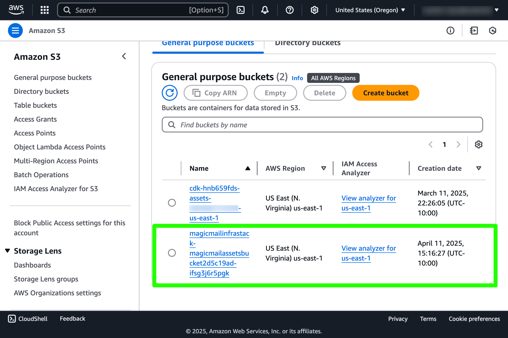
Screenshot of the S3 console showing the CDK-created bucket
"Success! We've defined and deployed infrastructure using TypeScript and CDK."
Making Changes to the Stack
"IaC makes updates easy and repeatable," Maya said. "Let's add tags to our bucket."
"In lib/magicmail-infra-stack.ts, after the assetsBucket definition, use the cdk.Tags aspect:"
xxxxxxxxxx"The cdk.Tags.of(construct) allows you to apply tags to a construct. These tags are often propagated to the underlying CloudFormation resources."
"Now, let's see the difference before deploying:"
xxxxxxxxxx
Screenshot showing cdk diff output, indicating changes to the bucket's Tags property
"cdk diff shows us exactly what will change – in this case, the addition of tags to the S3 bucket resource."
"Satisfied with the diff, let's deploy the update:"
xxxxxxxxxx
Screenshot showing cdk deploy updating the stack
"CDK detects the stack already exists and performs an update via CloudFormation. After it completes, check the S3 console again – the bucket should now have the 'Project' and 'Environment' tags."

Screenshot of the S3 bucket's 'Tags' section showing the new tags
Using Context Values for Environment Configuration
"Often, we need slightly different configurations for different environments (dev, test, prod)," Maya said. "CDK provides context values as a way to pass environment-specific information into your app."
"Context can come from various sources (CLI --context flag, cdk.context.json file, cdk.json file, account context lookups). A common place to define defaults is the cdk.json file."
Maya opened cdk.json and added a context block:
xxxxxxxxxx"We've added default values for environment and project. Now, let's use the environment value in our stack to, for example, adjust the removal policy."
"Modify the assetsBucket definition in lib/magicmail-infra-stack.ts:"
xxxxxxxxxx"We use this.node.tryGetContext('key') to read the context value. Now, the removalPolicy and autoDeleteObjects settings depend on the environment context."
"To deploy this for 'dev' (using the default from cdk.json):"
xxxxxxxxxx"To deploy this for 'prod', overriding the context value via the command line:"
xxxxxxxxxx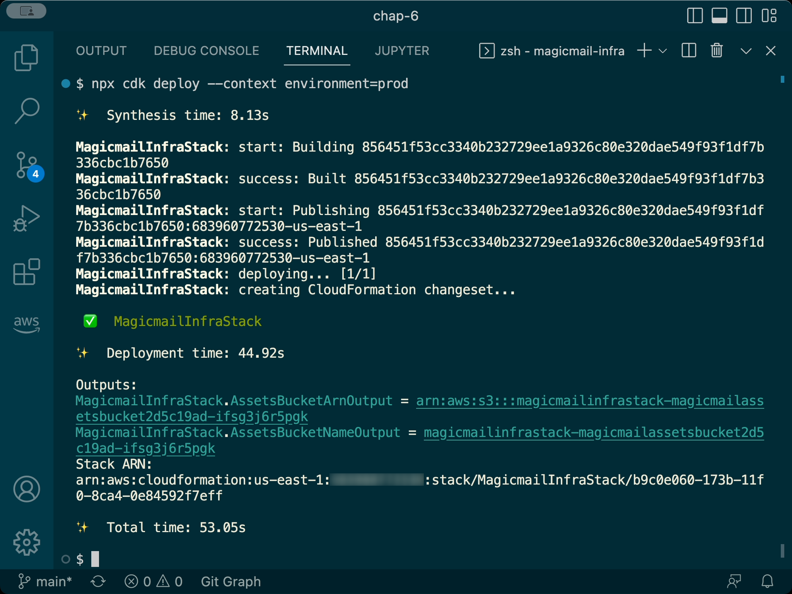
Screenshot showing cdk deploy --context environment=prod being run
"This command temporarily overrides the environment context value for this specific deployment, causing the removalPolicy to be set to RETAIN."
"Context values are a powerful way to manage environment-specific configurations within your CDK code."
Cleaning Up
"Finally, let's destroy the stack to clean up the AWS resources," Maya said.
"Run the destroy command. Make sure you specify the correct stack name if you deployed multiple times with different names."
xxxxxxxxxx
Screenshot showing the cdk destroy confirmation prompt
"CDK will list the resources to be deleted and ask for confirmation (y/n). Type y and press Enter."
"CloudFormation will now delete the stack and its associated resources. If you deployed with the default environment=dev, the bucket’s removalPolicy was likely set to DESTROY, so the bucket should be deleted—assuming it was empty or had autoDeleteObjects enabled.
However, if you deployed using --context environment=prod, the removalPolicy was set to RETAIN for safety. In this case, CloudFormation will delete the stack, but the S3 bucket will remain to preserve data. If you’re certain the bucket is no longer needed, you can delete it manually from the AWS Console or by running the AWS CLI command:
xxxxxxxxxxThe --force flag ensures the bucket is emptied before deletion."
CDK Best Practices (Recap)
"Let's quickly recap some key best practices we've touched on:"

Slide graphic summarizing CDK best practices
Use L2/L3 Constructs: Prefer higher-level constructs for conciseness and built-in best practices.
Embrace TypeScript: Leverage static typing, interfaces (
props), and enums.Keep Stacks Focused: Define related resources together in a stack. Break large applications into multiple stacks.
Use Context for Environments: Manage environment differences (
dev/prod) using context values.Removal Policies: Explicitly set
RemovalPolicy(RETAINfor critical data,DESTROYfor transient resources).Tag Resources: Apply tags consistently using
cdk.Tags.of().Use Auto-Generated Names: Let CDK/CloudFormation generate physical names for resources where possible to avoid conflicts, unless a specific name is required.
Review cdk diff:Check changes before deploying.Version Control: Store your CDK code in Git.
Wrapping Up
Maya closed her laptop. "That covers the fundamentals of AWS CDK! We've set up a project, learned about Apps, Stacks, and Constructs, defined an S3 bucket using TypeScript, managed environment configuration with context, and used the CDK CLI to synthesize, deploy, and destroy our infrastructure."
"Any questions before we wrap up?" she asked.
Ethan thought for a moment. "It feels much more like software development now. Defining the bucket in TypeScript was way cleaner than the YAML. I think I get the basics of the workflow. What's next for MagicMail?"
"Great question," Maya replied. "Now that we have the CDK fundamentals, we need a plan for the overall MagicMail system. In our next session, we'll step back and design the microservices architecture. We'll figure out what distinct services we need (like creature management, package tracking, delivery assignment), how they should communicate, and how to structure our CDK project to reflect that architecture."
"We'll likely create separate stacks, maybe even separate CDK constructs, for different parts of the system. This architectural planning is crucial before we start building more complex infrastructure."
Ethan nodded, closing his notebook. "Okay, architecture first, then implementation. That makes sense. I'm excited to see how CDK helps build a larger system like that."
"Exactly," Maya smiled. "CDK really shines when building and managing complex, interconnected systems. You're ready for the next step!"
Ethan's Homework
Create a new CDK project (
cdk init app --language typescriptin a new folder).Modify the stack definition in
lib/to create an S3 bucket.Configure the bucket to:
Be encrypted using
s3.BucketEncryption.KMS_MANAGED.Have versioning enabled.
Have a lifecycle rule that expires objects after 7 days (
expiration: cdk.Duration.days(7)).Use
cdk.RemovalPolicy.DESTROYandautoDeleteObjects: true.Add a
cdk.CfnOutputfor the bucket'sbucketWebsiteUrlproperty.Run
npx cdk deploy. Check the CloudFormation/S3 consoles to verify the settings. Note the output value.Run
npx cdk destroyto clean up.
Key Takeaways
AWS CDK defines cloud infrastructure using code (TypeScript, Python, etc.).
CDK code is synthesized (
cdk synth) into CloudFormation templates.Stacks are deployed/managed via
cdk deployandcdk destroy.Core concepts: App (root) -> Stack (deployment unit) -> Construct (cloud component - L1, L2, L3).
L2 constructs (
s3.Bucket) offer abstraction over L1/CFN (s3.CfnBucket).Use
propsinterfaces for configuration, leverage TypeScript's type safety.Use context (
cdk.json,--context) for environment-specific settings.Understand
RemovalPolicyto prevent accidental data loss.CDK CLI handles TypeScript compilation automatically during
synth/deploy.CDK construct IDs map to CloudFormation Logical IDs (often with a hash).
Looking Ahead
You've successfully built and deployed cloud infrastructure using CDK – a significant milestone! But as Ethan realized looking at his messy desktop, writing the code is just the beginning. How do professional teams manage infrastructure code effectively?
That's exactly what Book 2, AWS CDK Made Easy: Git, GitLab, and CI/CD Pipelines, explores. Join Maya and Ethan as they tackle the crucial next steps:
Version Control with Git: Learning how to track every change, collaborate without conflicts, and revert if needed.
Collaboration with GitLab: Using a central platform for code hosting, issue tracking, and code reviews.
Automation with CI/CD: Building pipelines to automatically test and deploy infrastructure changes safely and consistently.
Get ready to elevate your CDK skills by mastering the tools and workflows used by professional DevOps teams!
AWS Services Introduced
No new AWS services (focused on CDK).
CDK Concepts Introduced
aws-cdk-lib(library)
cdk init(project initialization)
App,Stack,Construct(core classes)Construct Levels (L1, L2, L3)
Construct Scope, ID, Props (
scope,id,props?)Construct Tree
cdk synth,cdk deploy,cdk diff,cdk destroy(CLI commands)
cdk.json(app configuration, context)Context Values (
node.tryGetContext,--context)
cdk.StackProps,env(account/region)
cdk.RemovalPolicy(DESTROY,RETAIN)
cdk.Tags,cdk.Duration
cdk.CfnOutput,exportNameSynthesized CloudFormation Logical IDs (vs. CDK IDs)
cdk.outdirectory
Epilogue
Ethan closed his laptop, a smile creeping across his face. What started as a crash course in cloud concepts and TypeScript had turned into something tangible—he'd actually built real infrastructure using the AWS CDK. With Maya’s guidance, the cloud didn’t feel so intimidating anymore.
But as he admired the progress, he couldn’t help but notice his desktop cluttered with test files and folders named final-final-v2.
Maya raised an eyebrow. "Ready to learn how the pros keep their code clean, shareable, and deployment-ready?"
Ethan nodded. “Let me guess… magic?”
She smiled. “Even better. Git. And GitLab.”
Acknowledgements
Amazon Web Services, AWS, and all related logos are trademarks of Amazon.com, Inc. or its affiliates. This book is not affiliated with, endorsed by, or sponsored by Amazon.com, Inc. or its affiliates. Use of these trademarks does not imply any association with or endorsement by Amazon.
ChatGPT is a trademark of OpenAI, LP. Claude and Claude.ai are trademarks of Anthropic, PBC. Perplexity and Perplexity.ai are trademarks of Perplexity AI, Inc. Gemini and Gemini.ai are trademarks of Google LLC. Midjourney is a trademark of Midjourney, Inc. This book is not affiliated with, endorsed by, or sponsored by OpenAI, LP, Anthropic, PBC, Perplexity AI, Inc., Google LLC, or Midjourney, Inc.
All other trademarks mentioned in this book are the property of their respective owners.
The author(s) acknowledge the use of AI assistance in the creation of this book, including technologies from OpenAI, Anthropic, Perplexity AI, Google, and MidJourney.